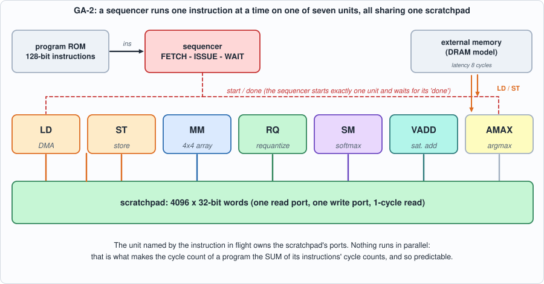
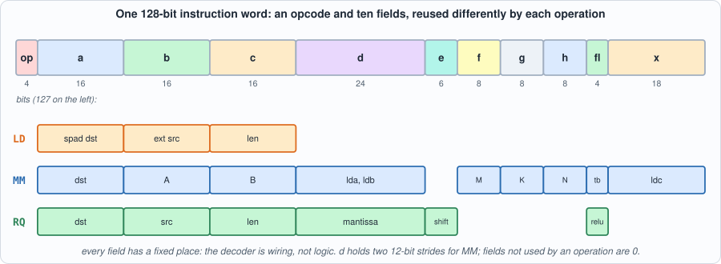
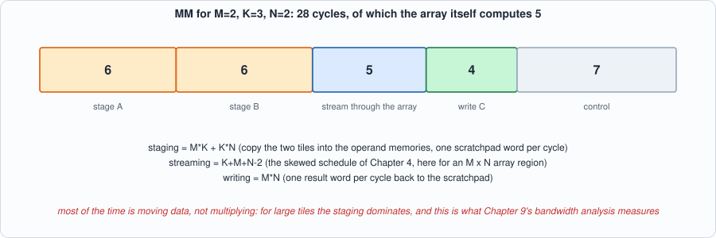
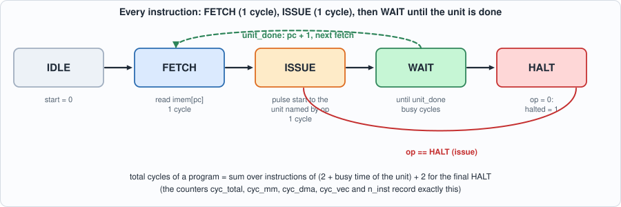
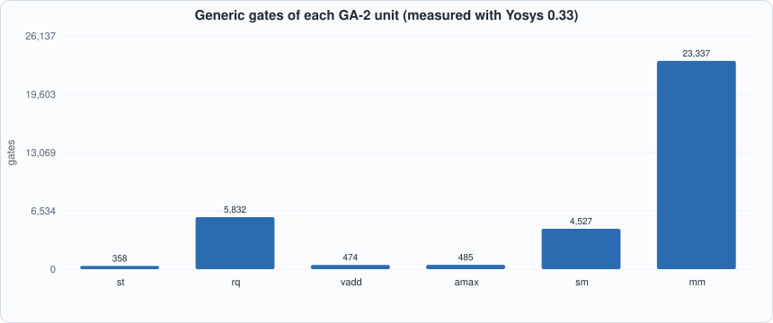
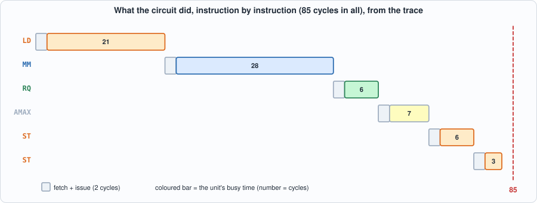
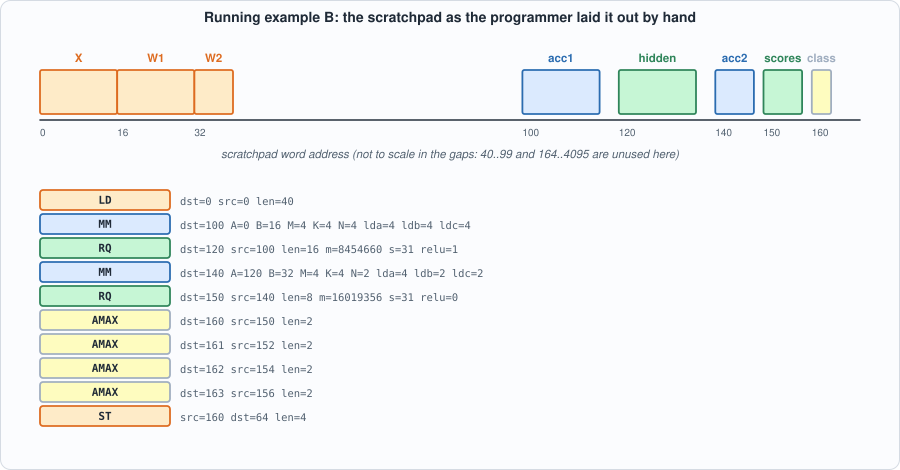

7. GA-2: An Instruction Set, a Sequencer, and the Whole Chip¶
About the animals in this picture and where they are standing
- Iberian ibex (Capra pyrenaica) lives in the mountains of Spain and Portugal. Its Pyrenean subspecies, the bucardo, died out in 2000. In 2003 scientists cloned one; the kid lived only minutes, making it the first extinct animal to be cloned.
- Alpine ibex (Capra ibex) lives in the European Alps, usually above the tree line on steep rock, and is a famously sure-footed climber. Males carry horns that can reach about a metre. Hunting left only a small remnant, around the Gran Paradiso in Italy, by the early 1800s; reintroductions have since restored it across the Alps.
- Siberian ibex (Capra sibirica) lives in the high mountains of Central Asia, from the Altai and Tian Shan to the Himalaya. It is one of the largest ibexes, and the males' ridged horns can exceed a metre in length.
- West Caucasian tur (Capra caucasica) lives only in the western Caucasus, on steep slopes above the forest line. Its horns are short and heavy, curving outward and back, and it moves up and down cliffs with ease.
- Domestic goat (Capra hircus) descends from the bezoar ibex and is among the oldest domesticated animals. There are on the order of a billion of them, kept for milk, meat, fibre and as pack animals.
The scene is imaginary: it is set on Mars: gravity about 38% of Earth's, a dusty red landscape and two small moons, Phobos and Deimos. The animals are stylised drawings, shown where they could not live, for effect.
What you will understand: how the pieces of Chapters 3-6 become one machine that runs programs. You will meet the instruction set (eight instructions, 128 bits each), write an assembler for it, build the execution units and the sequencer that drives them, check the whole chip against a Python reference simulator on 78 programs (memory contents and cycle counts, to the cycle), break it 49 ways, and learn what a test generator must never produce.
What you need to know first: Chapters 1-6. This chapter is mostly wiring and control, so the arithmetic is already trusted: the matrix unit is the Chapter 4 array, the requantizer is Chapter 3's circuit, the softmax is Chapter 6's algorithm. Appendix B (Verilog) covers the state-machine style used by the sequencer.
What this chapter builds: model/ga2_isa.py (instruction set, assembler, reference simulator, cycle model), rtl/ga2_vec.v, rtl/ga2_sm.v, rtl/rowmem.v, rtl/ga2_mm.v, rtl/ga2.v (units and sequencer), model/ga2_progs.py (program suites), tb/ga2_tb.v and tb/extmem_rw.v, tools/ch07_calibrate.py, tools/mut_ch07.py, and for the running examples tb/ga2_trace_tb.v, tools/ch07_example_a.py and tools/ch07_example_b.py.
From parts to a computer¶
Chapters 2 to 6 produced parts: a MAC, an array, a requantizer, a scratchpad with a DMA, and a softmax unit. Each works on its own with its own testbench. A chip is more than a bag of parts. Something has to decide which part runs when, with which data, and that something has to be told what to do: a program.
This chapter adds exactly three things. An instruction set (the contract between the program and the chip: what operations exist and how they are encoded). A sequencer (the control circuit that reads one instruction, starts the unit it names, and waits). And a way to know the chip is right: a Python simulator of the instruction set that predicts the contents of memory and the number of clock cycles for any program.
The design principle is "as simple as can be made correct". Instructions run one at a time. Every value takes a 32-bit word. There is no pipelining between instructions, no caches, no interrupts. This is deliberate: it makes the machine small enough to verify completely in a book, and it makes the cycle count of a program a simple sum, which is the property the compiler of Chapter 11 and the performance analysis of Chapter 9 both rely on. A real accelerator would overlap instructions to hide the waiting; Chapter 9 measures what that would buy.
The machine¶

Figure 7.1: the machine. One sequencer, seven units that take turns, one scratchpad that they share, and DRAM reachable only through LD and ST.The design is deliberately simple: instructions run one at a time, in order, never overlapped; every value occupies one 32-bit word (an int8 is stored sign-extended). That makes the cycle count of a program the sum of the cycle counts of its instructions, which is what lets this chapter predict it exactly. Chapter 9 asks what overlap would buy.
The instruction set¶
#!/usr/bin/env python3
"""GA-2: the instruction set of the accelerator, its assembler, and a Python reference simulator (the answer key for the circuit).
MEMORIES. External memory ("ext", DRAM) and the scratchpad ("spad", 4096 words) both hold 32-bit words. Every value occupies one word: an int8 is stored sign-extended, an int32 accumulator fills the word, a Q0.16 probability is 0..65536.
(The circuit stores one element per word to keep the memory system simple; the bandwidth analysis of Chapter 9 counts BYTES of the logical type, not words.)
INSTRUCTION. 128 bits: op[127:124] then fields a[123:108] b[107:92] c[91:76] d[75:52] e[51:46] f[45:38] g[37:30] h[29:22] fl[21:18] x[17:0].
op 0 HALT
op 1 LD a=spad dst, b=ext src, c=len spad[a+i] = ext[b+i]
op 2 ST a=spad src, b=ext dst, c=len ext[b+i] = spad[a+i]
op 3 MM a=dst, b=A, c=B, f=M, g=K, h=N, fl0=tb, d[11:0]=lda, d[23:12]=ldb, x[11:0]=ldc
C[m][n] = sum_k A[m][k] * B[k][n] (int8 inputs, int32 sums, wrap-around); A[m][k]=spad[b+m*lda+k]; B[k][n]=spad[c+k*ldb+n] (tb=0) or spad[c+n*ldb+k] (tb=1); spad[a+m*ldc+n]=C[m][n]. M,N in 1..4, K in 1..64
op 4 RQ a=dst, b=src, c=len, d=mantissa, e=shift, fl0=relu spad[a+i] = requant(int32 spad[b+i]) (Chapter 3)
op 5 SM a=dst, b=src, c=len spad[a+i] = softmax(int8 spad[b..])[i], Q0.16 (Chapter 6); dst == src or disjoint
op 6 VADD a=dst, b=src1, c=src2, d[15:0]=len spad[a+i] = clamp(int8 spad[b+i] + int8 spad[c+i], -127, 127)
op 7 AMAX a=dst, b=src, c=len spad[a] = index of the first maximum of the signed int32 spad[b..b+len-1]
op 8 UNPACK a=dst, b=src, c=len (added in Chapter 13) spad[a+8i+j] = signed 4-bit field j (bits 4j+3..4j) of spad[b+i], for j in 0..7; regions must not overlap
Operand regions of RQ, SM and VADD must be identical or disjoint (the units are pipelined, so partial overlap is undefined and the program generators never produce it).
Instructions execute one at a time, in order."""
import os, sys
sys.path.insert(0, os.path.dirname(os.path.abspath(__file__)))
from quant import requant
from softmax_gold import softmax_fixed
SPAD = 4096
EXT = int(os.environ.get("GA2_EXT", "2048")) # external memory words; Chapter 7's tests use 2048, the attention programs of Chapter 8 use 8192
OPS = {"HALT": 0, "LD": 1, "ST": 2, "MM": 3, "RQ": 4, "SM": 5, "VADD": 6, "AMAX": 7, "UNPACK": 8}
NAMES = {v: k for k, v in OPS.items()}
FIELDS = {"a": (123, 16), "b": (107, 16), "c": (91, 16), "d": (75, 24), "e": (51, 6), "f": (45, 8), "g": (37, 8), "h": (29, 8), "fl": (21, 4), "x": (17, 18)}
def s8(v): v &= 0xFF; return v - 256 if v & 128 else v
def s32(v): v &= 0xFFFFFFFF; return v - (1 << 32) if v & (1 << 31) else v
def encode(ins):
"""ins: dict with 'op' (name) and field names a,b,c,d,e,f,g,h,fl,x (missing = 0). Returns the 128-bit integer."""
w = OPS[ins["op"]] << 124
for name, (hi, width) in FIELDS.items():
v = ins.get(name, 0); assert 0 <= v < (1 << width), (ins, name); w |= v << (hi - width + 1)
return w
def decode(w):
ins = {"op": NAMES[w >> 124]}
for name, (hi, width) in FIELDS.items(): ins[name] = (w >> (hi - width + 1)) & ((1 << width) - 1)
return ins
# ---- the assembler: one instruction per line, key=value, in terms of the operation's own names
ARGS = {"LD": ("dst", "src", "len"), "ST": ("src", "dst", "len"), "MM": ("dst", "A", "B", "M", "K", "N", "tb", "lda", "ldb", "ldc"), "RQ": ("dst", "src", "len", "m", "s", "relu"),
"SM": ("dst", "src", "len"), "VADD": ("dst", "src1", "src2", "len"), "AMAX": ("dst", "src", "len"), "UNPACK": ("dst", "src", "len"), "HALT": ()}
def full(ins): return {**{k: 0 for k in FIELDS}, **ins}
def build(op, **k): return full(_build(op, **k))
def _build(op, **k):
"""Build an instruction dict from the operation's own argument names (missing fields are 0)."""
op = op.upper(); assert set(k) <= set(ARGS[op]), (op, k)
if op == "LD": return {"op": op, "a": k["dst"], "b": k["src"], "c": k["len"]}
if op == "ST": return {"op": op, "a": k["src"], "b": k["dst"], "c": k["len"]}
if op == "MM": return {"op": op, "a": k["dst"], "b": k["A"], "c": k["B"], "f": k["M"], "g": k["K"], "h": k["N"], "fl": k.get("tb", 0), "d": k.get("lda", k["K"]) | (k.get("ldb", 0) << 12), "x": k.get("ldc", k["N"])}
if op == "RQ": return {"op": op, "a": k["dst"], "b": k["src"], "c": k["len"], "d": k["m"], "e": k["s"], "fl": k.get("relu", 0)}
if op in ("SM", "AMAX", "UNPACK"): return {"op": op, "a": k["dst"], "b": k["src"], "c": k["len"]}
if op == "VADD": return {"op": op, "a": k["dst"], "b": k["src1"], "c": k["src2"], "d": k["len"]}
return {"op": "HALT"}
def assemble(text):
prog = []
for line in text.splitlines():
line = line.split(";")[0].strip()
if not line: continue
parts = line.split(); kw = {}
for p in parts[1:]: key, val = p.split("="); kw[key] = int(val, 0)
prog.append(build(parts[0], **kw))
return prog
def disassemble(ins):
op = ins["op"]; a, b, c, d, e, f, g, h, fl, x = (ins[k] for k in "a b c d e f g h fl x".split())
if op == "LD": return f"LD dst={a} src={b} len={c}"
if op == "ST": return f"ST src={a} dst={b} len={c}"
if op == "MM": return f"MM dst={a} A={b} B={c} M={f} K={g} N={h} tb={fl & 1} lda={d & 0xFFF} ldb={d >> 12} ldc={x & 0xFFF}"
if op == "RQ": return f"RQ dst={a} src={b} len={c} m={d} s={e} relu={fl & 1}"
if op == "SM": return f"SM dst={a} src={b} len={c}"
if op == "VADD": return f"VADD dst={a} src1={b} src2={c} len={d & 0xFFFF}"
if op == "AMAX": return f"AMAX dst={a} src={b} len={c}"
if op == "UNPACK": return f"UNPACK dst={a} src={b} len={c}"
return "HALT"
# ---- the reference simulator
class Machine:
def __init__(self, ext=None): self.spad = [0] * SPAD; self.ext = list(ext) if ext else [0] * EXT; self.n_inst = 0
def run(self, prog, maxsteps=100000):
for ins in prog:
op = ins["op"]; a, b, c, d, e, f, g, h, fl, x = (ins[k] for k in "a b c d e f g h fl x".split()); sp = self.spad
if op == "HALT": break
self.n_inst += 1
if op == "LD":
for i in range(c): sp[a + i] = self.ext[b + i] & 0xFFFFFFFF
elif op == "ST":
for i in range(c): self.ext[b + i] = sp[a + i] & 0xFFFFFFFF
elif op == "MM":
lda, ldb, ldc, tb = d & 0xFFF, d >> 12, x & 0xFFF, fl & 1
A = [[s8(sp[b + m * lda + k]) for k in range(g)] for m in range(f)]
B = [[s8(sp[c + (n * ldb + k if tb else k * ldb + n)]) for n in range(h)] for k in range(g)]
for m in range(f):
for n in range(h): sp[a + m * ldc + n] = sum(A[m][k] * B[k][n] for k in range(g)) & 0xFFFFFFFF
elif op == "RQ":
r = [requant(s32(sp[b + i]), d, e, bool(fl & 1)) & 0xFFFFFFFF for i in range(c)]
for i in range(c): sp[a + i] = r[i]
elif op == "SM":
p = softmax_fixed([s8(sp[b + i]) for i in range(c)])
for i in range(c): sp[a + i] = p[i]
elif op == "VADD":
n = d & 0xFFFF; r = [max(-127, min(127, s8(sp[b + i]) + s8(sp[c + i]))) & 0xFFFFFFFF for i in range(n)]
for i in range(n): sp[a + i] = r[i]
elif op == "AMAX":
v = [s32(sp[b + i]) for i in range(c)]; sp[a] = v.index(max(v))
elif op == "UNPACK":
for i in range(c):
w = sp[b + i]
for j in range(8): nib = (w >> (4 * j)) & 15; sp[a + 8 * i + j] = (nib - 16 if nib & 8 else nib) & 0xFFFFFFFF
return self
# ---- the cycle model: how many clock cycles each instruction takes, derived from the structure of each unit
# per instruction: 1 fetch + 1 issue + the unit's busy time (WAIT). The unit times are formulas in the operands; the constants K_* are read off single-instruction runs of the circuit
# (Chapter 7 does this), then FIXED, and checked on random programs to the cycle.
LAT = 8
K = {"LD": 1, "ST": 2, "MM": 7, "RQ": 2, "SM": 6, "VADD": 2, "AMAX": 3, "UNPACK": 1}
def wait_cycles(ins):
op = ins["op"]; a, b, c, d, e, f, g, h, fl, x = (ins[k] for k in "a b c d e f g h fl x".split())
if op == "LD": return c + LAT + K["LD"]
if op == "ST": return c + K["ST"]
if op == "MM": return f * g + g * h + (g + f + h - 2) + f * h + K["MM"]
if op == "RQ": return c + K["RQ"]
if op == "SM": return 3 * c + 41 + K["SM"]
if op == "VADD": return 2 * (d & 0xFFFF) + K["VADD"]
if op == "AMAX": return c + K["AMAX"]
if op == "UNPACK": return 10 * c + K["UNPACK"]
return 0
UNIT = {"LD": "dma", "ST": "dma", "MM": "mm", "RQ": "vec", "SM": "vec", "VADD": "vec", "AMAX": "vec", "UNPACK": "vec"}
def cycle_counts(prog):
"""Predicted [total, mm, dma, vec, n_inst] counters for a whole program ending in HALT (the HALT costs fetch + issue)."""
cnt = {"mm": 0, "dma": 0, "vec": 0}; total = 0; n = 0
for ins in prog:
if ins["op"] == "HALT": break
w = wait_cycles(ins); cnt[UNIT[ins["op"]]] += w; total += 2 + w; n += 1
return [total + 2, cnt["mm"], cnt["dma"], cnt["vec"], n]
The top of that file is the specification; the rest is the assembler, a reference simulator, and the cycle model.

Figure 7.2: one fixed layout for every instruction. A field means different things to different operations, but it is always in the same place, so the decoder is wiring. Eight instructions (a ninth,UNPACK, is added in Chapter 13 for 4-bit weights and appears in the code listings below, but nothing in Chapters 7 to 12 uses it):
| op | name | does |
|---|---|---|
| 0 | HALT |
stop (an all-zero word is a HALT) |
| 1 | LD dst src len |
external memory -> scratchpad (the DMA of Chapter 5) |
| 2 | ST src dst len |
scratchpad -> external memory |
| 3 | MM dst A B M K N tb lda ldb ldc |
C = A x B, int8 in, int32 out; M, N <= 4, K <= 64; tb reads B transposed; the ld* are row strides |
| 4 | RQ dst src len m s relu |
requantize int32 -> int8 (Chapter 3) |
| 5 | SM dst src len |
softmax of int8 scores -> Q0.16 probabilities (Chapter 6) |
| 6 | VADD dst src1 src2 len |
saturating int8 add (residual connections) |
| 7 | AMAX dst src len |
index of the first maximum (greedy decoding picks the next token with it) |
Two design choices to notice. MM has strides (lda, ldb, ldc) so that one instruction can multiply a tile of a bigger matrix without copying it out: Chapter 8's attention reads the keys of the cache straight from where they sit. And MM is limited to a 4 x 4 output tile; it is the compiler's job (Chapter 11) to cut a big product into such tiles. Hardware that does less makes the compiler's job real, which is the point of this book.
An example, in the assembler's syntax (comments after ;):
ld dst=0 src=0 len=12 ; A (2x3) and B (3x2) from external memory
mm dst=100 A=0 B=6 M=2 K=3 N=2 lda=3 ldb=2 ldc=2 ; C = A x B, int32
rq dst=110 src=100 len=4 m=8388608 s=23 relu=1 ; requantize: 2^23 / 2^23 = 1.0, so int8 = clamp(C), relu
amax dst=120 src=110 len=4 ; which of the four results is largest
st src=100 dst=20 len=4 ; C
st src=110 dst=24 len=4 ; int8 results
st src=120 dst=28 len=1 ; the index
halt
The execution units¶
Each unit takes the 128-bit instruction when start pulses, owns the scratchpad ports while it is busy, and pulses done after its last write. Because the scratchpad read is synchronous (address now, data next cycle), every unit is a small pipeline: issue read i in one cycle, process word i in the next.
Store, requantize, add, argmax: rtl/ga2_vec.v¶
// Chapter 7: the simple units of GA-2. Each takes the 128-bit instruction when `start` pulses, owns the scratchpad ports while `busy`, and pulses `done` when its last word is written.
// Scratchpad reads are synchronous (address now, data next cycle), so every unit is a small PIPELINE: issue read i in one cycle, process word i in the next.
// Field positions: a=ins[123:108] b=ins[107:92] c=ins[91:76] d=ins[75:52] e=ins[51:46] fl=ins[21:18] (see model/ga2_isa.py).
// ST: scratchpad -> external memory. ST a=src b=ext dst c=len
module ga2_st (input clk, input rst, input start, input [127:0] ins, output reg busy, output reg done,
output [11:0] ra, input [31:0] rd, output wr_valid, output [15:0] wr_addr, output [31:0] wr_data);
reg [11:0] src, len, i, j; reg [15:0] dst; reg v;
assign ra = src + i; assign wr_valid = v; assign wr_addr = dst + j; assign wr_data = rd;
always @(posedge clk) begin
done <= 1'b0;
if (rst) begin busy <= 1'b0; v <= 1'b0; end
else if (start && !busy) begin busy <= 1'b1; src <= ins[119:108]; dst <= ins[107:92]; len <= ins[87:76]; i <= 0; j <= 0; v <= 1'b0; end
else if (busy) begin
v <= (i < len); if (i < len) i <= i + 1;
if (v) begin j <= j + 1; if (j == len - 1) begin busy <= 1'b0; done <= 1'b1; v <= 1'b0; end end
end
end
endmodule
// RQ: requantize int32 words to int8 words (Chapter 3). RQ a=dst b=src c=len d=mantissa e=shift fl0=relu
module ga2_rq (input clk, input rst, input start, input [127:0] ins, output reg busy, output reg done,
output [11:0] ra, input [31:0] rd, output we, output [11:0] wa, output [31:0] wd);
reg [11:0] src, dst, len, i, j; reg [23:0] m; reg [5:0] s; reg relu; reg v;
wire signed [7:0] q; requant rqu (.acc(rd), .m(m), .s(s), .relu(relu), .q(q));
assign ra = src + i; assign we = v; assign wa = dst + j; assign wd = {{24{q[7]}}, q};
always @(posedge clk) begin
done <= 1'b0;
if (rst) begin busy <= 1'b0; v <= 1'b0; end
else if (start && !busy) begin busy <= 1'b1; dst <= ins[119:108]; src <= ins[103:92]; len <= ins[87:76]; m <= ins[75:52]; s <= ins[51:46]; relu <= ins[18]; i <= 0; j <= 0; v <= 1'b0; end
else if (busy) begin
v <= (i < len); if (i < len) i <= i + 1;
if (v) begin j <= j + 1; if (j == len - 1) begin busy <= 1'b0; done <= 1'b1; v <= 1'b0; end end
end
end
endmodule
// VADD: saturating int8 add of two vectors, results clamped to -127..127. VADD a=dst b=src1 c=src2 d[15:0]=len. One scratchpad read port, so each element takes two cycles.
module ga2_vadd (input clk, input rst, input start, input [127:0] ins, output reg busy, output reg done,
output [11:0] ra, input [31:0] rd, output we, output [11:0] wa, output [31:0] wd);
reg [11:0] s1, s2, dst, j; reg [15:0] len; reg [16:0] cnt; reg v, par; reg signed [7:0] x;
assign ra = cnt[0] ? (s2 + cnt[16:1]) : (s1 + cnt[16:1]);
wire signed [8:0] sum = {x[7], x} + {rd[7], rd[7:0]};
wire signed [7:0] r = (sum > 9'sd127) ? 8'sd127 : (sum < -9'sd127) ? -8'sd127 : sum[7:0];
assign we = v && par; assign wa = dst + j; assign wd = {{24{r[7]}}, r};
always @(posedge clk) begin
done <= 1'b0;
if (rst) begin busy <= 1'b0; v <= 1'b0; end
else if (start && !busy) begin busy <= 1'b1; dst <= ins[119:108]; s1 <= ins[103:92]; s2 <= ins[87:76]; len <= ins[67:52]; cnt <= 0; j <= 0; v <= 1'b0; end
else if (busy) begin
v <= (cnt < {len, 1'b0}); par <= cnt[0]; if (cnt < {len, 1'b0}) cnt <= cnt + 1;
if (v && !par) x <= rd[7:0];
if (v && par) begin j <= j + 1; if (j == len - 1) begin busy <= 1'b0; done <= 1'b1; v <= 1'b0; end end
end
end
endmodule
// AMAX: index of the first maximum of len signed 32-bit words; the index is written to dst. AMAX a=dst b=src c=len
module ga2_amax (input clk, input rst, input start, input [127:0] ins, output reg busy, output reg done,
output [11:0] ra, input [31:0] rd, output we, output [11:0] wa, output [31:0] wd);
reg [11:0] src, dst, len, i, j, bidx; reg signed [31:0] best; reg v, fin;
assign ra = src + i; assign we = fin; assign wa = dst; assign wd = {20'd0, bidx};
always @(posedge clk) begin
done <= 1'b0;
if (rst) begin busy <= 1'b0; v <= 1'b0; fin <= 1'b0; end
else if (start && !busy) begin busy <= 1'b1; dst <= ins[119:108]; src <= ins[103:92]; len <= ins[87:76]; i <= 0; j <= 0; v <= 1'b0; fin <= 1'b0; end
else if (busy) begin
if (fin) begin fin <= 1'b0; busy <= 1'b0; done <= 1'b1; end
else begin
v <= (i < len); if (i < len) i <= i + 1;
if (v) begin
if (j == 0 || $signed(rd) > best) begin best <= rd; bidx <= j; end
j <= j + 1; if (j == len - 1) fin <= 1'b1;
end
end
end
end
endmodule
// UNPACK (Chapter 13): expand packed 4-bit weights. Each scratchpad word holds eight signed 4-bit fields (field j in bits 4j+3..4j); field j of source word i becomes the sign-extended word dst[8i + j].
// UNPACK a=dst b=src c=number of packed source words. dst and src must not overlap. The scratchpad has one write port, so a source word costs 10 cycles: 1 to read it, 1 to latch it, 8 to write its fields.
module ga2_unp (input clk, input rst, input start, input [127:0] ins, output reg busy, output reg done,
output [11:0] ra, input [31:0] rd, output we, output [11:0] wa, output [31:0] wd);
localparam S_RD = 0, S_LAT = 1, S_WR = 2;
reg [1:0] st; reg [11:0] src, dst, len, i; reg [2:0] j; reg [31:0] w;
assign ra = src + i; assign we = busy && st == S_WR; assign wa = dst + {i, 3'b000} + j;
wire [3:0] nib = w[4*j +: 4]; assign wd = {{28{nib[3]}}, nib};
always @(posedge clk) begin
done <= 1'b0;
if (rst) begin busy <= 1'b0; st <= S_RD; end
else if (start && !busy) begin busy <= 1'b1; dst <= ins[119:108]; src <= ins[103:92]; len <= ins[87:76]; i <= 0; j <= 0; st <= S_RD; end
else if (busy) case (st)
S_RD: st <= S_LAT;
S_LAT: begin w <= rd; j <= 0; st <= S_WR; end
S_WR: begin
j <= j + 1;
if (j == 7) begin
if (i == len - 1) begin busy <= 1'b0; done <= 1'b1; end else begin i <= i + 1; st <= S_RD; end
end
end
endcase
end
endmodule
ga2_rq instantiates Chapter 3's requant combinationally between the read and the write. ga2_vadd has only one read port, so it takes two cycles per element (read one operand, read the other) and clamps to -127..127 as Chapter 3 requires. ga2_amax keeps the best value so far with a strict greater-than, so ties give the first index.
Softmax: rtl/ga2_sm.v¶
// Chapter 7: the softmax unit of GA-2: Chapter 6's algorithm, but reading its input from the scratchpad and writing its output there, so the row can have any length.
// pass 1: read x, find the maximum m. pass 2: read x again, e = exp_lut[m - x], write e to dst, sum += e. divide: r = 2^38 / sum. pass 3: read e from dst, write (e * r + 2^21) >> 22.
// SM a=dst b=src c=len. dst must equal src or not overlap it.
module ga2_sm (input clk, input rst, input start, input [127:0] ins, output reg busy, output reg done,
output [11:0] ra, input [31:0] rd, output we, output [11:0] wa, output [31:0] wd);
localparam P1 = 0, P2 = 1, DIVS = 2, WAITD = 3, P3 = 4;
reg [2:0] st; reg [11:0] src, dst, len, i, j; reg v; reg signed [7:0] m; reg [31:0] sum; reg [39:0] r;
wire signed [7:0] x = rd[7:0];
wire [8:0] dfull = {m[7], m} - {x[7], x}; wire [15:0] e; exp_lut lut (.d(dfull[7:0]), .e(e));
reg d_start; wire d_busy, d_done; wire [39:0] d_quot, d_rem;
divu #(.W(40)) div (.clk(clk), .rst(rst), .start(d_start), .num(40'd1 << 38), .den({8'd0, sum}), .busy(d_busy), .done(d_done), .quot(d_quot), .rem(d_rem));
wire [55:0] prod = rd[15:0] * r; wire [55:0] rounded = prod + 56'd2097152;
assign ra = (st == P3) ? dst + i : src + i;
assign we = v && (st == P2 || st == P3); assign wa = dst + j; assign wd = (st == P2) ? {16'd0, e} : {15'd0, rounded[38:22]};
wire last = (j == len - 1);
always @(posedge clk) begin
done <= 1'b0; d_start <= 1'b0;
if (rst) begin busy <= 1'b0; v <= 1'b0; end
else if (start && !busy) begin busy <= 1'b1; dst <= ins[119:108]; src <= ins[103:92]; len <= ins[87:76]; i <= 0; j <= 0; v <= 1'b0; m <= -8'sd128; sum <= 0; st <= P1; end
else if (busy) begin
case (st)
P1, P2, P3: begin
v <= (i < len); if (i < len) i <= i + 1;
if (v) begin
if (st == P1 && x > m) m <= x;
if (st == P2) sum <= sum + e;
j <= j + 1;
if (last) begin
v <= 1'b0; i <= 0; j <= 0;
if (st == P1) st <= P2; else if (st == P2) st <= DIVS; else begin busy <= 1'b0; done <= 1'b1; end
end
end
end
DIVS: begin d_start <= 1'b1; st <= WAITD; end
WAITD: if (d_done) begin r <= d_quot; st <= P3; end
endcase
end
end
endmodule
This is Chapter 6's algorithm, rebuilt around the scratchpad: pass 1 finds the maximum, pass 2 writes the exponentials into the destination and sums them, one division, pass 3 rescales them in place. Because it reads and writes memory it handles any length, not only the 8 or 64 of Chapter 6 (the suite includes a 600-element softmax).
The matrix unit: rtl/rowmem.v, rtl/ga2_mm.v¶
// Chapter 7: a small operand memory with an asynchronous read, used by the matrix unit to hold one row of A or one column of B.
module rowmem #(parameter DEPTH = 64) (input clk, input we, input [5:0] waddr, input signed [7:0] wdata, input [5:0] raddr, output signed [7:0] rdata);
reg signed [7:0] mem [0:DEPTH-1];
always @(posedge clk) if (we) mem[waddr] <= wdata;
assign rdata = mem[raddr];
endmodule
// Chapter 7: the matrix unit of GA-2. It loads an M x K tile of A and a K x N tile of B from the scratchpad into small operand memories (one per row of A, one per column of B),
// streams them SKEWED through the 4 x 4 systolic array of Chapter 4, and writes the M x N int32 result back, one word per cycle.
// MM a=dst b=A c=B f=M g=K h=N fl0=tb d[11:0]=lda d[23:12]=ldb x[11:0]=ldc. M, N <= 4, K <= 64.
// A[m][k] = spad[A + m*lda + k]; B[k][n] = spad[B + k*ldb + n] (tb = 0) or spad[B + n*ldb + k] (tb = 1); C[m][n] -> spad[dst + m*ldc + n].
// Time: M*K (load A) + K*N (load B) + 1 + (K+M+N-2) (stream) + M*N (store) + a few cycles of control.
module ga2_mm (input clk, input rst, input start, input [127:0] ins, output reg busy, output reg done,
output [11:0] ra, input [31:0] rd, output we, output [11:0] wa, output [31:0] wd);
localparam IDLE = 0, LA = 1, LB = 2, PRE = 3, RUN = 4, OUT = 5, FIN = 6;
reg [2:0] st; reg [11:0] dst, abase, bbase, lda, ldb, ldc; reg [3:0] M, N; reg [6:0] K; reg tb;
reg [11:0] ptr, rowbase; reg [3:0] m, n; reg [6:0] k; reg iss, v; reg [3:0] m_d, n_d; reg [6:0] k_d;
reg [7:0] t; reg [11:0] orow; reg [11:0] oaddr;
// operand memories
wire signed [7:0] a_rd [0:3]; wire signed [7:0] b_rd [0:3]; reg [5:0] a_ra [0:3]; reg [5:0] b_ra [0:3];
genvar gi;
generate for (gi = 0; gi < 4; gi = gi + 1) begin : opm
rowmem am (.clk(clk), .we(v && st == LA && m_d == gi), .waddr(k_d[5:0]), .wdata(rd[7:0]), .raddr(a_ra[gi]), .rdata(a_rd[gi]));
rowmem bm (.clk(clk), .we(v && st == LB && n_d == gi), .waddr(k_d[5:0]), .wdata(rd[7:0]), .raddr(b_ra[gi]), .rdata(b_rd[gi]));
end endgenerate
// the array
reg [31:0] aedge, bedge; wire clr_s = (st == PRE); wire [511:0] cbus; // clr is high during the PRE cycle, so the array is clean when the first operands arrive
systolic #(.N(4)) arr (.clk(clk), .clr(clr_s), .a_edge(aedge), .b_edge(bedge), .c(cbus));
integer ii;
always @* begin
aedge = 32'd0; bedge = 32'd0;
for (ii = 0; ii < 4; ii = ii + 1) begin
a_ra[ii] = t[5:0] - ii[5:0]; b_ra[ii] = t[5:0] - ii[5:0];
if (st == RUN) begin
if (ii < M && t >= ii && (t - ii) < K) aedge[8*ii +: 8] = a_rd[ii];
if (ii < N && t >= ii && (t - ii) < K) bedge[8*ii +: 8] = b_rd[ii];
end
end
end
// scratchpad port
wire [11:0] stepn = tb ? ldb : 12'd1;
assign ra = ptr; assign we = (st == OUT); assign wa = oaddr; assign wd = cbus[32*(m*4 + n) +: 32];
always @(posedge clk) begin
done <= 1'b0;
if (rst) begin busy <= 1'b0; st <= IDLE; v <= 1'b0; end
else if (start && !busy) begin
busy <= 1'b1; dst <= ins[119:108]; abase <= ins[103:92]; bbase <= ins[87:76]; M <= ins[41:38]; K <= ins[36:30]; N <= ins[25:22]; tb <= ins[18];
lda <= ins[63:52]; ldb <= ins[75:64]; ldc <= ins[11:0];
st <= LA; iss <= 1'b1; v <= 1'b0; m <= 0; k <= 0; ptr <= ins[103:92]; rowbase <= ins[103:92];
end
else if (busy) case (st)
LA: begin
v <= iss; m_d <= m; k_d <= k;
if (iss) begin
if (k == K - 1) begin k <= 0; m <= m + 1; rowbase <= rowbase + lda; ptr <= rowbase + lda; if (m == M - 1) iss <= 1'b0; end
else begin k <= k + 1; ptr <= ptr + 1; end
end
if (!iss && !v) begin st <= LB; iss <= 1'b1; k <= 0; n <= 0; ptr <= bbase; rowbase <= bbase; end
end
LB: begin
v <= iss; n_d <= n; k_d <= k;
if (iss) begin
if (n == N - 1) begin n <= 0; k <= k + 1; rowbase <= rowbase + (tb ? 12'd1 : ldb); ptr <= rowbase + (tb ? 12'd1 : ldb); if (k == K - 1) iss <= 1'b0; end
else begin n <= n + 1; ptr <= ptr + stepn; end
end
if (!iss && !v) begin st <= PRE; end
end
PRE: begin t <= 0; st <= RUN; end
RUN: begin
t <= t + 1;
if (t == K + M + N - 3) begin st <= OUT; m <= 0; n <= 0; orow <= dst; oaddr <= dst; end
end
OUT: begin
if (n == N - 1) begin
n <= 0; m <= m + 1; orow <= orow + ldc; oaddr <= orow + ldc;
if (m == M - 1) begin st <= FIN; end
end else begin n <= n + 1; oaddr <= oaddr + 1; end
end
FIN: begin busy <= 1'b0; done <= 1'b1; st <= IDLE; end
endcase
end
endmodule
The array needs N operands of A and N of B every cycle, but the scratchpad delivers one word per cycle. So the unit first stages the tiles: A's row m into operand memory m, B's column n into operand memory n (that is what rowmem is: eight small memories, each with one read address). Then it streams them skewed (memory i is read at position t - i, exactly the schedule of Chapter 4) through the 4 x 4 array, and finally writes the M x N result back, one word per cycle.

Figure 7.4: where the 28 cycles of the example's MM go.Its time is M*K + K*N (staging) + (K+M+N-2) (streaming) + M*N (writing) plus a few cycles of control. Most of it is staging, not arithmetic: a point Chapter 9 returns to.
The sequencer: rtl/ga2.v¶
// Chapter 7: GA-2, the whole accelerator: a sequencer that fetches one 128-bit instruction at a time, hands it to the unit it names, waits for that unit to finish, and moves on.
// Units: LD (the DMA of Chapter 5), ST, MM (the systolic array of Chapter 4), RQ (Chapter 3), SM (Chapter 6), VADD, AMAX. Memory: one 4096-word scratchpad; external memory through a read port (latency set by the outside) and a write port.
// The program lives outside (a ROM answering imem_addr -> imem_data in the same cycle). A zero word is HALT.
// Per instruction: 1 cycle FETCH, 1 cycle ISSUE, then the unit's busy time. Counters (cleared by `start`) give the profile used in Chapter 9.
module ga2 (input clk, input rst, input start, output reg halted,
output [15:0] imem_addr, input [127:0] imem_data,
output req_valid, output [15:0] req_addr, input resp_valid, input [31:0] resp_data,
output wr_valid, output [15:0] wr_addr, output [31:0] wr_data,
output reg [31:0] cyc_total, output reg [31:0] cyc_mm, output reg [31:0] cyc_dma, output reg [31:0] cyc_vec, output reg [31:0] n_inst);
localparam IDLE = 0, FETCH = 1, ISSUE = 2, WAIT = 3, HALT = 4;
localparam OP_HALT = 0, OP_LD = 1, OP_ST = 2, OP_MM = 3, OP_RQ = 4, OP_SM = 5, OP_VADD = 6, OP_AMAX = 7, OP_UNPACK = 8;
reg [2:0] st; reg [15:0] pc; reg [127:0] ins; wire [3:0] op = ins[127:124];
assign imem_addr = pc;
// scratchpad and the unit ports
wire sp_we; wire [11:0] sp_wa; wire [31:0] sp_wd; wire [11:0] sp_ra; wire [31:0] sp_rd;
sram #(.W(32), .AW(12)) sp (.clk(clk), .we(sp_we), .waddr(sp_wa), .wdata(sp_wd), .raddr(sp_ra), .rdata(sp_rd));
wire go = (st == ISSUE);
wire ld_busy, ld_done, st_busy, st_done, mm_busy, mm_done, rq_busy, rq_done, sm_busy, sm_done, va_busy, va_done, am_busy, am_done;
wire ld_we; wire [11:0] ld_wa; wire [31:0] ld_wd;
dma #(.AW(12), .XW(16)) u_ld (.clk(clk), .rst(rst), .start(go && op == OP_LD), .src(ins[107:92]), .dst(ins[119:108]), .len(ins[87:76]), .busy(ld_busy), .done(ld_done),
.req_valid(req_valid), .req_addr(req_addr), .resp_valid(resp_valid), .resp_data(resp_data), .sram_we(ld_we), .sram_waddr(ld_wa), .sram_wdata(ld_wd));
wire [11:0] st_ra; ga2_st u_st (.clk(clk), .rst(rst), .start(go && op == OP_ST), .ins(ins), .busy(st_busy), .done(st_done), .ra(st_ra), .rd(sp_rd), .wr_valid(wr_valid), .wr_addr(wr_addr), .wr_data(wr_data));
wire mm_we; wire [11:0] mm_ra, mm_wa; wire [31:0] mm_wd;
ga2_mm u_mm (.clk(clk), .rst(rst), .start(go && op == OP_MM), .ins(ins), .busy(mm_busy), .done(mm_done), .ra(mm_ra), .rd(sp_rd), .we(mm_we), .wa(mm_wa), .wd(mm_wd));
wire rq_we; wire [11:0] rq_ra, rq_wa; wire [31:0] rq_wd;
ga2_rq u_rq (.clk(clk), .rst(rst), .start(go && op == OP_RQ), .ins(ins), .busy(rq_busy), .done(rq_done), .ra(rq_ra), .rd(sp_rd), .we(rq_we), .wa(rq_wa), .wd(rq_wd));
wire sm_we; wire [11:0] sm_ra, sm_wa; wire [31:0] sm_wd;
ga2_sm u_sm (.clk(clk), .rst(rst), .start(go && op == OP_SM), .ins(ins), .busy(sm_busy), .done(sm_done), .ra(sm_ra), .rd(sp_rd), .we(sm_we), .wa(sm_wa), .wd(sm_wd));
wire va_we; wire [11:0] va_ra, va_wa; wire [31:0] va_wd;
ga2_vadd u_va (.clk(clk), .rst(rst), .start(go && op == OP_VADD), .ins(ins), .busy(va_busy), .done(va_done), .ra(va_ra), .rd(sp_rd), .we(va_we), .wa(va_wa), .wd(va_wd));
wire am_we; wire [11:0] am_ra, am_wa; wire [31:0] am_wd;
ga2_amax u_am (.clk(clk), .rst(rst), .start(go && op == OP_AMAX), .ins(ins), .busy(am_busy), .done(am_done), .ra(am_ra), .rd(sp_rd), .we(am_we), .wa(am_wa), .wd(am_wd));
wire un_we; wire [11:0] un_ra, un_wa; wire [31:0] un_wd; wire un_busy, un_done;
ga2_unp u_un (.clk(clk), .rst(rst), .start(go && op == OP_UNPACK), .ins(ins), .busy(un_busy), .done(un_done), .ra(un_ra), .rd(sp_rd), .we(un_we), .wa(un_wa), .wd(un_wd));
// the scratchpad ports belong to the unit named by the instruction in flight
reg [3:0] cur;
assign sp_ra = (cur == OP_ST) ? st_ra : (cur == OP_MM) ? mm_ra : (cur == OP_RQ) ? rq_ra : (cur == OP_SM) ? sm_ra : (cur == OP_VADD) ? va_ra : (cur == OP_AMAX) ? am_ra : (cur == OP_UNPACK) ? un_ra : 12'd0;
assign sp_we = (cur == OP_LD) ? ld_we : (cur == OP_MM) ? mm_we : (cur == OP_RQ) ? rq_we : (cur == OP_SM) ? sm_we : (cur == OP_VADD) ? va_we : (cur == OP_AMAX) ? am_we : (cur == OP_UNPACK) ? un_we : 1'b0;
assign sp_wa = (cur == OP_LD) ? ld_wa : (cur == OP_MM) ? mm_wa : (cur == OP_RQ) ? rq_wa : (cur == OP_SM) ? sm_wa : (cur == OP_VADD) ? va_wa : (cur == OP_UNPACK) ? un_wa : am_wa;
assign sp_wd = (cur == OP_LD) ? ld_wd : (cur == OP_MM) ? mm_wd : (cur == OP_RQ) ? rq_wd : (cur == OP_SM) ? sm_wd : (cur == OP_VADD) ? va_wd : (cur == OP_UNPACK) ? un_wd : am_wd;
wire unit_done = (cur == OP_LD && ld_done) || (cur == OP_ST && st_done) || (cur == OP_MM && mm_done) || (cur == OP_RQ && rq_done) || (cur == OP_SM && sm_done) || (cur == OP_VADD && va_done) || (cur == OP_AMAX && am_done) || (cur == OP_UNPACK && un_done);
always @(posedge clk) begin
if (rst) begin st <= IDLE; halted <= 1'b0; cur <= 4'd15; end
else case (st)
IDLE: if (start) begin pc <= 0; st <= FETCH; halted <= 1'b0; cyc_total <= 0; cyc_mm <= 0; cyc_dma <= 0; cyc_vec <= 0; n_inst <= 0; end
FETCH: begin ins <= imem_data; st <= ISSUE; cyc_total <= cyc_total + 1; end
ISSUE: begin
cyc_total <= cyc_total + 1; cur <= op;
if (op == OP_HALT) begin st <= HALT; halted <= 1'b1; cur <= 4'd15; end else st <= WAIT;
end
WAIT: begin
cyc_total <= cyc_total + 1;
if (cur == OP_MM) cyc_mm <= cyc_mm + 1; else if (cur == OP_LD || cur == OP_ST) cyc_dma <= cyc_dma + 1; else cyc_vec <= cyc_vec + 1;
if (unit_done) begin pc <= pc + 1; n_inst <= n_inst + 1; st <= FETCH; cur <= 4'd15; end
end
HALT: ;
endcase
end
endmodule

Figure 7.3: the sequencer. FETCH and ISSUE take one cycle each; WAIT lasts as long as the unit is busy; an all-zero word is HALT.Three states do the work: FETCH (read the instruction at pc), ISSUE (start the unit named by the opcode), WAIT (until that unit says done). The unit named by the instruction in flight owns the scratchpad ports, selected by cur. The five counters are the profile Chapter 9 will use.
The reference simulator and the cycle model¶
model/ga2_isa.py (above) contains Machine, a Python simulator of the ISA that shares no code with the Verilog, and wait_cycles, the cycle model: each instruction takes 2 cycles of fetch and issue plus its unit's busy time, a formula in the operands:
| instruction | busy cycles |
|---|---|
LD |
len + LAT + c |
ST |
len + c |
MM |
M*K + K*N + (K+M+N-2) + M*N + c |
RQ |
len + c |
SM |
3*len + 41 + c |
VADD |
2*len + c |
AMAX |
len + c |
The shape of each formula is derived from the structure of the unit (three passes and a 40-cycle division for softmax; two reads per element for the add...). The constants c are control overheads that a diagram cannot give; they were read off the circuit by running each instruction alone with several sizes and subtracting the operand-dependent part:
#!/usr/bin/env python3
"""Chapter 7: read the cycle model's constants off the circuit. Each instruction type is run alone (followed by HALT) with several sizes; the busy time is the matching counter. The structural part of the formula
(the part that depends on the operands) is subtracted and what is left must be one constant per instruction type. Prints the table; the constants in model/ga2_isa.py (dict K) are these. Usage: ch07_calibrate.py"""
import os, re, sys, random
sys.path.insert(0, os.path.dirname(os.path.abspath(__file__))); sys.path.insert(0, os.path.join(os.path.dirname(os.path.abspath(__file__)), "..", "model"))
import hw, ga2_isa as I, ga2_progs as G
B = I.build; H = B("HALT")
CASES = [
("LD", "len=1", B("LD", dst=0, src=0, len=1), "dma", lambda ins: 1 + I.LAT), ("LD", "len=10", B("LD", dst=0, src=0, len=10), "dma", lambda ins: 10 + I.LAT), ("LD", "len=50", B("LD", dst=0, src=0, len=50), "dma", lambda ins: 50 + I.LAT),
("ST", "len=1", B("ST", src=0, dst=1024, len=1), "dma", lambda ins: 1), ("ST", "len=10", B("ST", src=0, dst=1024, len=10), "dma", lambda ins: 10),
("RQ", "len=1", B("RQ", dst=100, src=0, len=1, m=1 << 23, s=24), "vec", lambda ins: 1), ("RQ", "len=10", B("RQ", dst=100, src=0, len=10, m=1 << 23, s=24), "vec", lambda ins: 10),
("SM", "len=1", B("SM", dst=100, src=0, len=1), "vec", lambda ins: 3 + 41), ("SM", "len=10", B("SM", dst=100, src=0, len=10), "vec", lambda ins: 30 + 41), ("SM", "len=30", B("SM", dst=100, src=0, len=30), "vec", lambda ins: 90 + 41),
("VADD", "len=1", B("VADD", dst=100, src1=0, src2=10, len=1), "vec", lambda ins: 2), ("VADD", "len=10", B("VADD", dst=100, src1=0, src2=10, len=10), "vec", lambda ins: 20),
("AMAX", "len=1", B("AMAX", dst=100, src=0, len=1), "vec", lambda ins: 1), ("AMAX", "len=10", B("AMAX", dst=100, src=0, len=10), "vec", lambda ins: 10),
("MM", "M1 K1 N1", B("MM", dst=100, A=0, B=10, M=1, K=1, N=1), "mm", lambda ins: 1 + 1 + 1 + 1), ("MM", "M1 K4 N4", B("MM", dst=100, A=0, B=10, M=1, K=4, N=4, ldb=4), "mm", lambda ins: 4 + 16 + 7 + 4),
("MM", "M4 K8 N4", B("MM", dst=100, A=0, B=64, M=4, K=8, N=4, lda=8, ldb=4, ldc=4), "mm", lambda ins: 32 + 32 + 14 + 16), ("MM", "M2 K5 N3 tb", B("MM", dst=100, A=0, B=64, M=2, K=5, N=3, tb=1, lda=5, ldb=5, ldc=3), "mm", lambda ins: 10 + 15 + 8 + 6),
]
R = random.Random(1); words = [len(CASES)]
for c in CASES: words += G.record([c[2], H], G.ext_image(R))
open(os.path.join(hw.ROOT, "out", "ga2_programs.hex"), "w").write("\n".join("%08x" % (w & 0xFFFFFFFF) for w in words) + "\n")
F = ["rtl/sram.v", "rtl/dma.v", "rtl/systolic.v", "rtl/requant.v", "rtl/exp_lut.v", "rtl/divu.v", "rtl/rowmem.v", "rtl/ga2_vec.v", "rtl/ga2_sm.v", "rtl/ga2_mm.v", "rtl/ga2.v", "tb/extmem_rw.v", "tb/ga2_tb.v"]
rc, out = hw.sim_icarus(F, "ga2_tb", defines=("DUMP", "MAXPRINT=0"))
got = {int(m.group(1)): [int(x) for x in m.groups()[1:]] for m in (re.match(r"COUNTERS (\d+) (\d+) (\d+) (\d+) (\d+) (\d+)", l) for l in out.splitlines()) if m}
print(f"{'op':5s} {'operands':12s} {'measured busy':>14s} {'operand-dependent part':>23s} {'left over':>10s}")
left = {}
for i, (op, desc, ins, unit, f) in enumerate(CASES):
tot, mm, dma, vec, n = got[i]; busy = {"mm": mm, "dma": dma, "vec": vec}[unit]; rest = busy - f(ins); left.setdefault(op, set()).add(rest)
print(f"{op:5s} {desc:12s} {busy:14d} {f(ins):23d} {rest:10d}")
print("\nconstant per instruction type (must be a single value each):", {op: sorted(v) for op, v in left.items()})
print("model/ga2_isa.py K =", I.K, " consistent:", all(len(v) == 1 and list(v)[0] == I.K[op] for op, v in left.items()))
op operands measured busy operand-dependent part left over
LD len=1 10 9 1
LD len=10 19 18 1
LD len=50 59 58 1
ST len=1 3 1 2
ST len=10 12 10 2
RQ len=1 3 1 2
RQ len=10 12 10 2
SM len=1 50 44 6
SM len=10 77 71 6
SM len=30 137 131 6
VADD len=1 4 2 2
VADD len=10 22 20 2
AMAX len=1 4 1 3
AMAX len=10 13 10 3
MM M1 K1 N1 11 4 7
MM M1 K4 N4 38 31 7
MM M4 K8 N4 101 94 7
MM M2 K5 N3 tb 46 39 7
constant per instruction type (must be a single value each): {'LD': [1], 'ST': [2], 'RQ': [2], 'SM': [6], 'VADD': [2], 'AMAX': [3], 'MM': [7]}
model/ga2_isa.py K = {'LD': 1, 'ST': 2, 'MM': 7, 'RQ': 2, 'SM': 6, 'VADD': 2, 'AMAX': 3} consistent: True
If the structural part were wrong, the "left over" column would change with the size. It does not: one constant per instruction type (LD 1, ST 2, RQ 2, SM 6, VADD 2, AMAX 3, MM 7). Those are the only measured numbers in the model; everything the next sections check is a prediction.
The test programs: model/ga2_progs.py¶
#!/usr/bin/env python3
"""GA-2 test programs and the file the testbench reads. Usage: ga2_progs.py OUTFILE [NRANDOM] [SEED]
The file is a stream of 32-bit hex words: [nprograms] then, per program: [ninstructions], 4 words per instruction (most significant first), EXT words of initial external memory,
EXT words of the expected external memory after the program, and 5 expected counters: total cycles, MM cycles, DMA cycles, vector-unit cycles, instructions.
Memory plan for the random programs: ext[0..511] int8 data, ext[512..1023] arbitrary 32-bit data, ext[1024..2047] results. spad[0..2047] loaded inputs (arenas), spad[2048..3071] results."""
import os, random, sys
sys.path.insert(0, os.path.dirname(os.path.abspath(__file__)))
import ga2_isa as I
EXT = I.EXT
def ext_image(R):
img = [0] * EXT
for i in range(512): img[i] = R.randrange(-128, 128) & 0xFFFFFFFF
for i in range(512, 1024): img[i] = R.getrandbits(32)
return img
def directed():
"""One small program per behaviour worth naming; each loads data, does one thing and stores the result."""
P = []
ld = lambda dst, src, n: I.build("LD", dst=dst, src=src, len=n)
stt = lambda src, dst, n: I.build("ST", src=src, dst=dst, len=n)
H = I.build("HALT")
P.append([ld(0, 0, 16), stt(0, 1024, 16), H]) # copy through
P.append([ld(0, 0, 1), stt(0, 1024, 1), H]) # length one
P.append([ld(0, 0, 64), I.build("MM", dst=2048, A=0, B=16, M=1, K=1, N=1), stt(2048, 1024, 1), H]) # 1x1x1 matrix product
P.append([ld(0, 0, 256), I.build("MM", dst=2048, A=0, B=128, M=4, K=64, N=4, tb=0, lda=64, ldb=4, ldc=4), stt(2048, 1024, 16), H]) # largest tile
P.append([ld(0, 0, 256), I.build("MM", dst=2048, A=0, B=128, M=3, K=7, N=2, tb=1, lda=7, ldb=7, ldc=2), stt(2048, 1024, 6), H]) # transposed B
P.append([ld(0, 512, 32), I.build("RQ", dst=2048, src=0, len=32, m=(1 << 23) + 12345, s=30, relu=0), stt(2048, 1024, 32), H])
P.append([ld(0, 512, 32), I.build("RQ", dst=2048, src=0, len=32, m=(1 << 24) - 1, s=24, relu=1), stt(2048, 1024, 32), H])
P.append([ld(0, 0, 16), I.build("SM", dst=2048, src=0, len=16), stt(2048, 1024, 16), H])
P.append([ld(0, 0, 1), I.build("SM", dst=2048, src=0, len=1), stt(2048, 1024, 1), H])
P.append([ld(0, 0, 64), ld(64, 0, 64), I.build("VADD", dst=2048, src1=0, src2=64, len=64), stt(2048, 1024, 64), H])
P.append([ld(0, 512, 40), I.build("AMAX", dst=2048, src=0, len=40), stt(2048, 1024, 1), H])
# long vectors: lengths above 255 exercise the upper bits of every length field
P.append([ld(0, 0, 1500), stt(0, 548, 1500), H])
P.append([ld(0, 0, 1000), ld(1000, 0, 1000), I.build("VADD", dst=2048, src1=0, src2=1000, len=1000), stt(2048, 1024, 1000), H])
P.append([ld(0, 512, 500), I.build("RQ", dst=2048, src=0, len=500, m=(1 << 23) + 777, s=29, relu=0), stt(2048, 1024, 500), H])
P.append([ld(0, 0, 600), I.build("SM", dst=2048, src=0, len=600), stt(2048, 1024, 600), H])
P.append([ld(0, 0, 400), ld(400, 0, 400), I.build("AMAX", dst=2048, src=0, len=800), stt(2048, 1024, 1), H])
P.append([ld(0, 0, 8), I.build("AMAX", dst=2048, src=0, len=8), stt(2048, 1024, 1), H])
P.append([H]) # halt at once
return P
def rand_program(R):
prog = []; ld = lambda dst, src, n: prog.append(I.build("LD", dst=dst, src=src, len=n))
for a in range(4): # fill the arenas
ld(a * 512, R.choice([0, 0, 256, 512, 768]) if R.random() < 0.8 else R.randrange(0, 960), R.randrange(64, 256))
out = [2048] # next free result address
def take(n): a = out[0]; out[0] = min(a + n + R.randrange(0, 8), 3072 - 1); return min(a, 3072 - n)
def src_region(n): return R.randrange(0, 2048 - n) if R.random() < 0.7 else R.randrange(2048, 3072 - n)
def ok(d, n, srcs): return all(d == s0 or d + n <= s0 or s0 + n <= d for s0 in srcs) # regions must be identical or disjoint (RQ, SM, VADD are pipelined)
def pick(n, srcs):
inpl = [s0 for s0 in srcs if s0 >= 2048 and ok(s0, n, srcs)]
if inpl and R.random() < 0.3: return inpl[0]
for _ in range(60):
d = take(n) if R.random() < 0.5 else R.randrange(2048, 3072 - n)
if ok(d, n, srcs): return d
return None
for _ in range(R.randrange(10, 26)):
kind = R.choice(["MM", "MM", "MM", "RQ", "RQ", "SM", "SM", "VADD", "AMAX", "LD", "ST"])
if kind == "MM":
M, N, K = R.randrange(1, 5), R.randrange(1, 5), R.choice([R.randrange(1, 65), R.randrange(1, 9), 64, 1]); tb = R.randrange(2)
lda = K + R.randrange(0, 4); ldb = (K if tb else N) + R.randrange(0, 4); ldc = N + R.randrange(0, 3)
aext = (M - 1) * lda + K; bext = ((N - 1) * ldb + K) if tb else ((K - 1) * ldb + N); cext = (M - 1) * ldc + N
prog.append(I.build("MM", dst=take(cext), A=src_region(aext), B=src_region(bext), M=M, K=K, N=N, tb=tb, lda=lda, ldb=ldb, ldc=ldc))
elif kind == "RQ":
n = R.randrange(1, 65); s = src_region(n); d = pick(n, [s])
if d is None: continue
prog.append(I.build("RQ", dst=d, src=s, len=n, m=R.randrange(1 << 23, 1 << 24), s=R.randrange(0, 64) if R.random() < 0.3 else R.randrange(14, 40), relu=R.randrange(2)))
elif kind == "SM":
n = R.choice([R.randrange(1, 65), R.randrange(1, 9), 64]); s = src_region(n); d = pick(n, [s])
if d is None: continue
prog.append(I.build("SM", dst=d, src=s, len=n))
elif kind == "VADD":
n = R.randrange(1, 65); s1 = src_region(n); s2 = src_region(n); d = pick(n, [s1, s2])
if d is None: continue
prog.append(I.build("VADD", dst=d, src1=s1, src2=s2, len=n))
elif kind == "AMAX":
n = R.randrange(1, 65); prog.append(I.build("AMAX", dst=take(1), src=src_region(n), len=n))
elif kind == "LD":
n = R.randrange(1, 100); prog.append(I.build("LD", dst=R.randrange(0, 2048 - n), src=R.randrange(0, 1024 - n), len=n))
else:
n = R.randrange(1, 65); prog.append(I.build("ST", src=src_region(n), dst=R.randrange(1024, 2048 - n), len=n))
prog.append(I.build("ST", src=2048, dst=1024, len=1024)); prog.append(I.build("HALT")) # results out
return prog
def record(prog, ext0):
m = I.Machine(ext0).run(prog); words = [len(prog)]
for ins in prog:
w = I.encode(ins); words += [(w >> 96) & 0xFFFFFFFF, (w >> 64) & 0xFFFFFFFF, (w >> 32) & 0xFFFFFFFF, w & 0xFFFFFFFF]
return words + list(ext0) + m.ext + I.cycle_counts(prog)
def write(out, nrandom, seed):
R = random.Random(seed); recs = []
for p in directed(): recs.append(record(p, ext_image(R)))
for _ in range(nrandom): recs.append(record(rand_program(R), ext_image(R)))
open(out, "w").write("\n".join("%08x" % (w & 0xFFFFFFFF) for w in [len(recs)] + [w for r in recs for w in r]) + "\n"); return len(recs)
if __name__ == "__main__":
n = write(sys.argv[1], int(sys.argv[2]) if len(sys.argv) > 2 else 60, int(sys.argv[3]) if len(sys.argv) > 3 else 1)
print(f"{n} programs written to {sys.argv[1]} ({len(directed())} directed, {n - len(directed())} random)")
Eighteen directed programs (every instruction alone, length-one operands, the largest tile, transposed B, vectors of 500 to 1500 elements to exercise the upper bits of every length field, an immediate HALT) and a generator of random programs: each loads four arenas of data, then 10-25 random instructions with random sizes, strides and addresses, then stores the results. Everything is checked: the whole external memory afterwards and all five cycle counters.
// Chapter 7: run many programs on GA-2 and compare each with the Python reference: the whole external memory afterwards, and the five cycle counters.
// For every program: clear the scratchpad, load the program ROM and the external memory image, reset, start, wait for `halted` (or time out).
`timescale 1ns/1ps
`ifndef MAXPRINT
`define MAXPRINT 5
`endif
`ifndef EXTW
`define EXTW 2048
`endif
`ifndef LAT
`define LAT 8
`endif
module ga2_tb;
localparam EXT = `EXTW, LAT = `LAT;
reg clk = 0, rst = 1, start = 0; wire halted; wire [15:0] imem_addr; wire [127:0] imem_data;
wire req_valid; wire [15:0] req_addr; wire resp_valid; wire [31:0] resp_data; wire wr_valid; wire [15:0] wr_addr; wire [31:0] wr_data;
wire [31:0] cyc_total, cyc_mm, cyc_dma, cyc_vec, n_inst;
reg [127:0] imem [0:255];
assign imem_data = imem[imem_addr[7:0]];
ga2 dut (.clk(clk), .rst(rst), .start(start), .halted(halted), .imem_addr(imem_addr), .imem_data(imem_data),
.req_valid(req_valid), .req_addr(req_addr), .resp_valid(resp_valid), .resp_data(resp_data), .wr_valid(wr_valid), .wr_addr(wr_addr), .wr_data(wr_data),
.cyc_total(cyc_total), .cyc_mm(cyc_mm), .cyc_dma(cyc_dma), .cyc_vec(cyc_vec), .n_inst(n_inst));
extmem_rw #(.LAT(LAT), .DEPTH(EXT)) ext (.clk(clk), .rst(rst), .req_valid(req_valid), .req_addr(req_addr), .resp_valid(resp_valid), .resp_data(resp_data), .wr_valid(wr_valid), .wr_addr(wr_addr), .wr_data(wr_data));
always #5 clk = ~clk;
reg [31:0] vec [0:4194303]; integer np, p, off, ni, i, w, bad, badprog, waited, total_cycles; reg [31:0] want [0:4];
initial begin
$readmemh("out/ga2_programs.hex", vec); np = vec[0]; off = 1; bad = 0; badprog = 0; total_cycles = 0;
for (p = 0; p < np; p = p + 1) begin
ni = vec[off]; off = off + 1;
for (i = 0; i < 256; i = i + 1) imem[i] = 128'd0;
for (i = 0; i < ni; i = i + 1) begin imem[i] = {vec[off], vec[off+1], vec[off+2], vec[off+3]}; off = off + 4; end
for (i = 0; i < EXT; i = i + 1) ext.mem[i] = vec[off + i];
for (i = 0; i < 4096; i = i + 1) dut.sp.mem[i] = 32'd0;
off = off + EXT;
@(negedge clk); rst = 1; @(negedge clk); rst = 0; @(negedge clk); start = 1; @(negedge clk); start = 0;
waited = 0; while (!halted && waited < 100000) begin @(negedge clk); waited = waited + 1; end
if (!halted) begin $display("FAIL: program %0d did not halt", p); bad = bad + 1; badprog = badprog + 1; end
else begin
w = 0;
for (i = 0; i < EXT; i = i + 1) if (ext.mem[i] !== vec[off + i]) begin w = w + 1; if (bad < `MAXPRINT) $display("MISMATCH program %0d ext[%0d]: got %0h want %0h", p, i, ext.mem[i], vec[off + i]); end
want[0] = vec[off + EXT]; want[1] = vec[off + EXT + 1]; want[2] = vec[off + EXT + 2]; want[3] = vec[off + EXT + 3]; want[4] = vec[off + EXT + 4];
if (cyc_total !== want[0] || cyc_mm !== want[1] || cyc_dma !== want[2] || cyc_vec !== want[3] || n_inst !== want[4]) begin
w = w + 1; if (bad < `MAXPRINT) $display("MISMATCH program %0d counters: got total=%0d mm=%0d dma=%0d vec=%0d n=%0d want total=%0d mm=%0d dma=%0d vec=%0d n=%0d", p, cyc_total, cyc_mm, cyc_dma, cyc_vec, n_inst, want[0], want[1], want[2], want[3], want[4]);
end
if (w != 0) begin bad = bad + w; badprog = badprog + 1; end
total_cycles = total_cycles + cyc_total;
`ifdef DUMP
$display("COUNTERS %0d %0d %0d %0d %0d %0d", p, cyc_total, cyc_mm, cyc_dma, cyc_vec, n_inst);
`endif
end
off = off + EXT + 5;
end
if (bad == 0) $display("PASS: %0d programs match the Python reference (memory and all five cycle counters), %0d cycles in total (exit status 0)", np, total_cycles);
else begin $display("FAIL: %0d of %0d programs differ", badprog, np); $fatal(1, "ga2 failed"); end
$finish;
end
endmodule
// Chapter 7: external memory for GA-2's testbench: a pipelined read port with LAT cycles of latency and a write port that takes effect at once, and a reset that discards requests still in flight. Words 0..DEPTH-1. A testbench part, not a design.
module extmem_rw #(parameter LAT = 8, DEPTH = 2048) (input clk, input rst, input req_valid, input [15:0] req_addr, output resp_valid, output [31:0] resp_data, input wr_valid, input [15:0] wr_addr, input [31:0] wr_data);
reg [31:0] mem [0:DEPTH-1]; reg v [0:LAT-1]; reg [31:0] d [0:LAT-1]; integer k;
always @(posedge clk) begin
v[0] <= req_valid && !rst; d[0] <= (req_addr < DEPTH) ? mem[req_addr] : 32'hDEADBEEF; // a reset clears every request in flight
for (k = 1; k < LAT; k = k + 1) begin v[k] <= v[k-1] && !rst; d[k] <= d[k-1]; end
if (wr_valid && wr_addr < DEPTH) mem[wr_addr] <= wr_data;
end
assign resp_valid = v[LAT-1]; assign resp_data = d[LAT-1];
initial for (k = 0; k < LAT; k = k + 1) v[k] = 0;
endmodule
Running it¶
#!/usr/bin/env python3
"""Chapter 7: GA-2 through the flow: an assembled example, the reference simulator's answer, the program suites in both simulators, and what the pieces cost. Usage: ch07_run.py"""
import os, subprocess, sys, random
sys.path.insert(0, os.path.dirname(os.path.abspath(__file__))); sys.path.insert(0, os.path.join(os.path.dirname(os.path.abspath(__file__)), "..", "model"))
import hw, ga2_isa as I, ga2_progs as G
F = ["rtl/sram.v", "rtl/dma.v", "rtl/systolic.v", "rtl/requant.v", "rtl/exp_lut.v", "rtl/divu.v", "rtl/rowmem.v", "rtl/ga2_vec.v", "rtl/ga2_sm.v", "rtl/ga2_mm.v", "rtl/ga2.v", "tb/extmem_rw.v", "tb/ga2_tb.v"]
def line(out): return ([l for l in out.splitlines() if l.startswith(("PASS", "FAIL", "MISMATCH"))] or out.strip().splitlines()[-2:])[0]
print("== 1. an example program, assembled")
SRC = """ld dst=0 src=0 len=12 ; A (2x3) and B (3x2) from external memory
mm dst=100 A=0 B=6 M=2 K=3 N=2 lda=3 ldb=2 ldc=2 ; C = A x B, int32
rq dst=110 src=100 len=4 m=8388608 s=23 relu=1 ; requantize: 2^23 / 2^23 = 1.0, so int8 = clamp(C), relu
amax dst=120 src=110 len=4 ; which of the four results is largest
st src=100 dst=20 len=4 ; C
st src=110 dst=24 len=4 ; int8 results
st src=120 dst=28 len=1 ; the index
halt"""
prog = I.assemble(SRC); print(SRC); print("\nmachine code (128 bits each):"); [print(f" {I.encode(p):032x} {I.disassemble(p)}") for p in prog]
ext = [0] * I.EXT; ext[0:12] = [1, 2, 3, 4, 5, 6, 1, 0, 0, 1, 1, 1]
m = I.Machine(ext).run(prog)
print("\nthe reference simulator says: C =", [I.s32(v) for v in m.ext[20:24]], " int8 =", [I.s32(v) for v in m.ext[24:28]], " argmax =", m.ext[28], " cycles [total, mm, dma, vec, n]:", I.cycle_counts(prog))
words = [1] + G.record(prog, ext); open(os.path.join(hw.ROOT, "out", "ga2_programs.hex"), "w").write("\n".join("%08x" % (w & 0xFFFFFFFF) for w in words) + "\n")
for name, fn in (("Icarus", hw.sim_icarus), ("Verilator", hw.sim_verilator)): rc, out = fn(F, "ga2_tb"); print(f" the circuit, {name:10s}{line(out)} (exit {rc})")
print("\n== 2. the program suite: 18 directed programs + 60 random ones (seed 1)")
print(subprocess.run([sys.executable, "model/ga2_progs.py", "out/ga2_programs.hex", "60", "1"], cwd=hw.ROOT, capture_output=True, text=True).stdout.strip())
for name, fn in (("Icarus", hw.sim_icarus), ("Verilator", hw.sim_verilator)): rc, out = fn(F, "ga2_tb"); print(f" {name:10s}{line(out)} (exit {rc})")
print("\n== 3. a larger run: 200 fresh random programs (seed 7), Icarus")
print(subprocess.run([sys.executable, "model/ga2_progs.py", "out/ga2_programs.hex", "200", "7"], cwd=hw.ROOT, capture_output=True, text=True).stdout.strip())
rc, out = hw.sim_icarus(F, "ga2_tb"); print(f" {line(out)} (exit {rc})")
print("\n== 4. a different memory latency (LAT=20 instead of 8): the cycle model changes by one constant (LD costs len + LAT + 1)")
I.LAT = 20; subprocess.run([sys.executable, "-c", "import sys; sys.path.insert(0,'model'); import ga2_isa as I; I.LAT=20; import ga2_progs as G; print(G.write('out/ga2_programs.hex', 30, 3))"], cwd=hw.ROOT, capture_output=True)
rc, out = hw.sim_icarus(F, "ga2_tb", defines=("LAT=20",)); print(f" {line(out)} (exit {rc})")
print("\n== 5. Yosys: what the pieces cost")
GATES = "abc -g AND,NAND,OR,NOR,XOR,XNOR,ANDNOT,ORNOT,MUX; opt_clean; stat"
RT = ["rtl/sram.v", "rtl/dma.v", "rtl/systolic.v", "rtl/requant.v", "rtl/exp_lut.v", "rtl/divu.v", "rtl/rowmem.v", "rtl/ga2_vec.v", "rtl/ga2_sm.v", "rtl/ga2_mm.v", "rtl/ga2.v"]
print(f"{'unit':10s} {'generic gates':>14s} {'iCE40 cells':>12s} {'flip-flops':>11s} {'block RAMs':>11s}")
for top in ("ga2_st", "ga2_rq", "ga2_vadd", "ga2_amax", "ga2_sm", "ga2_mm", "ga2"):
g = hw.synth_stats(RT, top, f"synth -flatten -top {top}; {GATES}") if top != "ga2" else None
l = hw.synth_stats(RT, top, f"synth_ice40 -flatten -top {top}; stat")
ff = sum(v for k, v in l["cells"].items() if k.startswith("SB_DFF")); ram = l["cells"].get("SB_RAM40_4K", 0)
print(f"{top:10s} {(str(g['total']) if g else 'n/a (scratchpad)'):>14s} {l['total']:12d} {ff:11d} {ram:11d}")
Output (cloud sandbox -- live-executed; Icarus Verilog 12.0, Verilator 5.020, Yosys 0.33)
== 1. an example program, assembled
ld dst=0 src=0 len=12 ; A (2x3) and B (3x2) from external memory
mm dst=100 A=0 B=6 M=2 K=3 N=2 lda=3 ldb=2 ldc=2 ; C = A x B, int32
rq dst=110 src=100 len=4 m=8388608 s=23 relu=1 ; requantize: 2^23 / 2^23 = 1.0, so int8 = clamp(C), relu
amax dst=120 src=110 len=4 ; which of the four results is largest
st src=100 dst=20 len=4 ; C
st src=110 dst=24 len=4 ; int8 results
st src=120 dst=28 len=1 ; the index
halt
machine code (128 bits each):
100000000000c0000000000000000000 LD dst=0 src=0 len=12
300640000000600200300080c0800002 MM dst=100 A=0 B=6 M=2 K=3 N=2 tb=0 lda=3 ldb=2 ldc=2
4006e006400048000005c00000040000 RQ dst=110 src=100 len=4 m=8388608 s=23 relu=1
70078006e00040000000000000000000 AMAX dst=120 src=110 len=4
20064001400040000000000000000000 ST src=100 dst=20 len=4
2006e001800040000000000000000000 ST src=110 dst=24 len=4
20078001c00010000000000000000000 ST src=120 dst=28 len=1
00000000000000000000000000000000 HALT
the reference simulator says: C = [4, 5, 10, 11] int8 = [4, 5, 10, 11] argmax = 3 cycles [total, mm, dma, vec, n]: [93, 28, 36, 13, 7]
the circuit, Icarus PASS: 1 programs match the Python reference (memory and all five cycle counters), 93 cycles in total (exit status 0) (exit 0)
the circuit, Verilator PASS: 1 programs match the Python reference (memory and all five cycle counters), 93 cycles in total (exit status 0) (exit 0)
== 2. the program suite: 18 directed programs + 60 random ones (seed 1)
78 programs written to out/ga2_programs.hex (18 directed, 60 random)
Icarus PASS: 78 programs match the Python reference (memory and all five cycle counters), 219583 cycles in total (exit status 0) (exit 0)
Verilator PASS: 78 programs match the Python reference (memory and all five cycle counters), 219583 cycles in total (exit status 0) (exit 0)
== 3. a larger run: 200 fresh random programs (seed 7), Icarus
218 programs written to out/ga2_programs.hex (18 directed, 200 random)
PASS: 218 programs match the Python reference (memory and all five cycle counters), 710814 cycles in total (exit status 0) (exit 0)
== 4. a different memory latency (LAT=20 instead of 8): the cycle model changes by one constant (LD costs len + LAT + 1)
PASS: 48 programs match the Python reference (memory and all five cycle counters), 126768 cycles in total (exit status 0) (exit 0)
== 5. Yosys: what the pieces cost
unit generic gates iCE40 cells flip-flops block RAMs
ga2_st 358 228 67 0
ga2_rq 5832 3025 94 0
ga2_vadd 474 352 93 0
ga2_amax 485 315 108 0
ga2_sm 4527 2348 309 0
ga2_mm 23337 12294 3957 2
ga2 n/a (scratchpad) 21543 5151 34
Reading it¶
- The example program runs. Two matrices are loaded, multiplied (
C = [[4,5],[10,11]]), requantized, the largest result's index found (3), and all stored: 93 cycles in total, split into 28 on the matrix unit, 36 on DMA (loading 12 words costs 21 of them: the memory latency is paid once per load), and 13 on the vector units. The circuit and the reference agree, and the cycle counters match the model's prediction to the cycle. - 78 programs, then 200 more, pass in both simulators, memory and counters. That is 710,814 cycles of random programs checked against the reference.
- The same suite passes at a different memory latency after changing a single constant in the model (
LAT). - Cost (Yosys, iCE40 mapping): the whole chip is 21,543 cells with 5,151 flip-flops and 34 block RAMs (32 of them are the 4096 x 32-bit scratchpad). The requantizer is the largest unit by far (5,832 generic gates, mostly the 32 x 24-bit multiplier) and the softmax the second (4,527). The matrix unit's 23,337 gates are mostly the systolic array and the operand memories (3,957 flip-flops, because Yosys mapped most of them to registers). (Yosys counts; no timing, no area. The totals include the UNPACK unit added in Chapter 13, which is why they differ slightly from the version of this chapter that preceded it.)

Figure 7.5 (measured): gate counts per unit.Running example A: follow a program through the sequencer¶
The point of this example: the instruction set is a contract; the sequencer is the thing that honours it. This example runs a seven-instruction program on the circuit with a trace of the sequencer's state machine (tb/ga2_trace_tb.v prints a line at every FETCH, ISSUE and DONE), and puts the measured start, end and busy time of every instruction next to the cycle model's prediction.
// Chapter 7, running examples: run ONE program (out/ga2_trace.hex in ga2_tb's format, count word = 1) and print what the sequencer does: "F pc cycle" when it fetches, "I pc cycle" when it issues, "D pc cycle" when the unit reports done, "H cycle" when it halts; then the counters.
`timescale 1ns/1ps
`ifndef EXTW
`define EXTW 2048
`endif
module ga2_trace_tb;
localparam EXT = `EXTW, LAT = 8;
reg clk = 0, rst = 1, start = 0; wire halted; wire [15:0] imem_addr; wire [127:0] imem_data;
wire req_valid; wire [15:0] req_addr; wire resp_valid; wire [31:0] resp_data; wire wr_valid; wire [15:0] wr_addr; wire [31:0] wr_data; wire [31:0] cyc_total, cyc_mm, cyc_dma, cyc_vec, n_inst;
reg [127:0] imem [0:255]; assign imem_data = imem[imem_addr[7:0]];
ga2 dut (.clk(clk), .rst(rst), .start(start), .halted(halted), .imem_addr(imem_addr), .imem_data(imem_data), .req_valid(req_valid), .req_addr(req_addr), .resp_valid(resp_valid), .resp_data(resp_data), .wr_valid(wr_valid), .wr_addr(wr_addr), .wr_data(wr_data),
.cyc_total(cyc_total), .cyc_mm(cyc_mm), .cyc_dma(cyc_dma), .cyc_vec(cyc_vec), .n_inst(n_inst));
extmem_rw #(.LAT(LAT), .DEPTH(EXT)) ext (.clk(clk), .rst(rst), .req_valid(req_valid), .req_addr(req_addr), .resp_valid(resp_valid), .resp_data(resp_data), .wr_valid(wr_valid), .wr_addr(wr_addr), .wr_data(wr_data));
always #5 clk = ~clk;
reg [31:0] vec [0:100000]; integer np, off, ni, i, waited;
always @(negedge clk) if (!rst) begin
if (dut.st == 1) $display("F %0d %0d", dut.pc, dut.cyc_total);
if (dut.st == 2) $display("I %0d %0d", dut.pc, dut.cyc_total);
if (dut.st == 3 && dut.unit_done) $display("D %0d %0d", dut.pc, dut.cyc_total);
end
initial begin
$readmemh("out/ga2_trace.hex", vec); np = vec[0]; off = 1; ni = vec[off]; off = off + 1;
for (i = 0; i < 256; i = i + 1) imem[i] = 128'd0;
for (i = 0; i < ni; i = i + 1) begin imem[i] = {vec[off], vec[off+1], vec[off+2], vec[off+3]}; off = off + 4; end
for (i = 0; i < EXT; i = i + 1) ext.mem[i] = vec[off + i];
for (i = 0; i < 4096; i = i + 1) dut.sp.mem[i] = 32'd0;
@(negedge clk); rst = 1; @(negedge clk); rst = 0; @(negedge clk); start = 1; @(negedge clk); start = 0;
waited = 0; while (!halted && waited < 100000) begin @(negedge clk); waited = waited + 1; end
$display("H %0d", cyc_total); $display("COUNTERS %0d %0d %0d %0d %0d", cyc_total, cyc_mm, cyc_dma, cyc_vec, n_inst);
for (i = 0; i < EXT; i = i + 1) if (ext.mem[i] !== 32'd0 && i >= 16) $display("X %0d %0d", i, $signed(ext.mem[i]));
$finish;
end
endmodule
#!/usr/bin/env python3
"""Chapter 7, running example A: follow a program through the sequencer. A six-instruction program is assembled by hand, run on the circuit (Icarus) with a trace of the sequencer's FETCH, ISSUE and DONE moments, and every instruction's start, end and busy time is compared with the cycle model and the reference simulator. Writes out/ch07_example_a.json for the figures. Usage: ch07_example_a.py"""
import json, os, subprocess, sys
sys.path.insert(0, os.path.dirname(os.path.abspath(__file__))); sys.path.insert(0, os.path.join(os.path.dirname(os.path.abspath(__file__)), "..", "model"))
import hw, ga2_isa as I, ga2_progs as G
R = hw.ROOT
SRC = """ld dst=0 src=0 len=12
mm dst=100 A=0 B=6 M=2 K=3 N=2 lda=3 ldb=2 ldc=2
rq dst=110 src=100 len=4 m=8388608 s=23 relu=1
amax dst=120 src=110 len=4
st src=110 dst=24 len=4
st src=120 dst=28 len=1
halt"""
prog = I.assemble(SRC); ext = [0] * I.EXT; ext[0:12] = [1, 2, 3, 4, 5, 6, 1, 0, 0, 1, 1, 1]
open(os.path.join(R, "out", "ga2_trace.hex"), "w").write("\n".join("%08x" % (w & 0xFFFFFFFF) for w in [1] + G.record(prog, ext)) + "\n")
rc, out = hw.sim_icarus(["rtl/sram.v", "rtl/dma.v", "rtl/systolic.v", "rtl/requant.v", "rtl/exp_lut.v", "rtl/divu.v", "rtl/rowmem.v", "rtl/ga2_vec.v", "rtl/ga2_sm.v", "rtl/ga2_mm.v", "rtl/ga2.v", "tb/extmem_rw.v", "tb/ga2_trace_tb.v"], "ga2_trace_tb"); assert rc == 0, out
ev = {"F": {}, "I": {}, "D": {}}; counters = None; memx = {}
for l in out.splitlines():
p = l.split()
if not p: continue
if p[0] in ev: ev[p[0]][int(p[1])] = int(p[2])
if p[0] == "COUNTERS": counters = list(map(int, p[1:]))
if p[0] == "X": memx[int(p[1])] = int(p[2])
print("program (assembled by hand):"); print(SRC)
print("\nwhat the circuit's sequencer did (cycle numbers are the circuit's own counter at the start of each state):")
print(" pc instruction FETCH ISSUE DONE busy(measured) busy(model) agree")
rows = []; t_model = 0; ok = True
for pc, ins in enumerate(prog[:-1]):
f, i_, d = ev["F"][pc], ev["I"][pc], ev["D"][pc]; busy = d - i_; mw = I.wait_cycles(ins); good = busy == mw and f == t_model; ok &= good
rows.append({"pc": pc, "text": I.disassemble(ins), "op": ins["op"], "fetch": f, "issue": i_, "done": d, "busy": busy, "model": mw}); t_model += 2 + mw
print(f" {pc:2d} {I.disassemble(ins):50s}{f:5d} {i_:5d} {d:5d} {busy:10d} {mw:10d} {'yes' if good else 'NO'}")
print(f"\nHALT: fetched at cycle {ev['F'][len(prog)-1]}, issued at {ev['I'][len(prog)-1]}; the total counter reads {counters[0]} (model: {I.cycle_counts(prog)[0]})")
print("counters [total, mm, dma, vec, n_inst] circuit:", counters, " model:", I.cycle_counts(prog)); ok &= counters == I.cycle_counts(prog)
m = I.Machine(ext).run(prog); want = {i: I.s32(v) for i, v in enumerate(m.ext) if i >= 16 and v}
print("\nexternal memory after the program (non-zero words at addresses >= 16): circuit", memx, " reference", want, " ->", "identical" if memx == want else "DIFFERENT"); ok &= memx == want
print("\nreading it: each instruction costs 1 (FETCH) + 1 (ISSUE) + its busy time. The matrix multiply (mm) is", rows[1]["busy"], "cycles for a 2x3 by 3x2 product, of which only K+M+N-2 =", 3 + 2 + 2 - 2, "are the array computing:")
print("the rest is staging the tiles in (M*K + K*N =", 2 * 3 + 3 * 2, ") and writing the result out (M*N =", 4, "), plus control. The load (ld) of 12 words costs", rows[0]["busy"], "= 12 + latency 8 + 1: the memory latency is paid once.")
json.dump({"rows": rows, "counters": counters, "total": counters[0]}, open(os.path.join(R, "out", "ch07_example_a.json"), "w")); sys.exit(0 if ok else 1)
To compile and run: python3 tools/ch07_example_a.py (it needs iverilog).
Output (cloud sandbox -- live-executed)
program (assembled by hand):
ld dst=0 src=0 len=12
mm dst=100 A=0 B=6 M=2 K=3 N=2 lda=3 ldb=2 ldc=2
rq dst=110 src=100 len=4 m=8388608 s=23 relu=1
amax dst=120 src=110 len=4
st src=110 dst=24 len=4
st src=120 dst=28 len=1
halt
what the circuit's sequencer did (cycle numbers are the circuit's own counter at the start of each state):
pc instruction FETCH ISSUE DONE busy(measured) busy(model) agree
0 LD dst=0 src=0 len=12 0 1 22 21 21 yes
1 MM dst=100 A=0 B=6 M=2 K=3 N=2 tb=0 lda=3 ldb=2 ldc=2 23 24 52 28 28 yes
2 RQ dst=110 src=100 len=4 m=8388608 s=23 relu=1 53 54 60 6 6 yes
3 AMAX dst=120 src=110 len=4 61 62 69 7 7 yes
4 ST src=110 dst=24 len=4 70 71 77 6 6 yes
5 ST src=120 dst=28 len=1 78 79 82 3 3 yes
HALT: fetched at cycle 83, issued at 84; the total counter reads 85 (model: 85)
counters [total, mm, dma, vec, n_inst] circuit: [85, 28, 30, 13, 6] model: [85, 28, 30, 13, 6]
external memory after the program (non-zero words at addresses >= 16): circuit {24: 4, 25: 5, 26: 10, 27: 11, 28: 3} reference {24: 4, 25: 5, 26: 10, 27: 11, 28: 3} -> identical
reading it: each instruction costs 1 (FETCH) + 1 (ISSUE) + its busy time. The matrix multiply (mm) is 28 cycles for a 2x3 by 3x2 product, of which only K+M+N-2 = 5 are the array computing:
the rest is staging the tiles in (M*K + K*N = 12 ) and writing the result out (M*N = 4 ), plus control. The load (ld) of 12 words costs 21 = 12 + latency 8 + 1: the memory latency is paid once.

Figure 7.6: the trace as a timeline. Grey squares are the two overhead cycles of every instruction; the coloured bar is the unit working.Walkthrough.
- FETCH, ISSUE, WAIT. The first instruction is fetched at cycle 0, issued at cycle 1, and its unit (the DMA) works until cycle 22: 21 busy cycles. The next FETCH is at cycle 23: the sequencer takes one cycle after
doneto latch the next instruction word. Every row of the table shows the same pattern. - The loads.
ld len=12takes 21 cycles = 12 words + 8 cycles of memory latency + 1 of control. The latency is paid once, not per word (Chapter 5). - The matrix unit.
mmtakes 28 cycles for a 2x3 by 3x2 product. Of those, only K + M + N - 2 = 5 are the array computing; 12 are staging the two tiles into the operand memories and 4 writing the result; 7 are control. For small tiles the overhead dominates, which is the lesson of Chapter 4's utilization formula seen from a different side. - The vector units.
rqtakes 6 cycles for 4 words (len + 2),amax7 (len + 3 plus the final compare), the twostinstructions 6 and 3. - The totals. The six instructions plus the final HALT give 85 cycles, and the circuit's counters read
[85, 28, 30, 13, 6]: total, matrix-unit, DMA, vector-unit cycles and instructions. The model predicts exactly the same, and the external memory afterwards is identical to the reference simulator's. (The instruction list is the one from the original version of this chapter without the extrastof the raw int32 result, hence 85 and not 93.) - What the check proves. The model's constants were calibrated on single instructions (the table above); this program is a prediction, and it is right to the cycle. That is the property the rest of the book leans on.
Running example B: a neural network written by hand¶
The point of this example: to feel what the chip is like to program, and so to understand why Chapter 11 builds a compiler. The task: a tiny network with four inputs, four hidden units with ReLU, and two outputs, applied to a batch of four samples. The weights are chosen so that the network can be understood: hidden unit 0 measures how much the first two inputs exceed the last two (x0 + x1 - x2 - x3), hidden unit 1 is its negative, and the other two are distractors. The task is to classify each sample, and the program does that in ten instructions.
#!/usr/bin/env python3
"""Chapter 7, running example B: a small neural network written by hand in GA-2 assembly. Four inputs -> 4 hidden units (relu) -> 2 classes, for a batch of four samples. The weights are quantized with Chapter 3's rules, the program is written out with every address chosen by hand, run on the circuit and on the reference simulator, and the classes are compared with the floating-point network. Writes out/ch07_example_b.json. Usage: ch07_example_b.py"""
import json, math, os, subprocess, sys
sys.path.insert(0, os.path.dirname(os.path.abspath(__file__))); sys.path.insert(0, os.path.join(os.path.dirname(os.path.abspath(__file__)), "..", "model"))
import hw, ga2_isa as I, ga2_progs as G
from quant import quantize, scale_for, mantissa_shift
R = hw.ROOT
X = [[0.9, 0.7, 0.1, -0.2], [-0.5, 0.1, 0.8, 0.6], [0.3, -0.2, 0.4, 0.0], [0.6, 0.8, 0.5, 0.4]] # four samples, four features
W1 = [[1, -1, 1, 0], [1, -1, -1, 0], [-1, 1, 0, 1], [-1, 1, 0, -1]] # 4 x 4: s = x0+x1-x2-x3, -s, x0-x1, x2-x3
W2 = [[1, 0], [0, 1], [0.5, -0.5], [-0.5, 0.5]] # 4 x 2: class scores
relu = lambda v: max(0.0, v); mm = lambda A, B: [[sum(A[i][k] * B[k][j] for k in range(len(B))) for j in range(len(B[0]))] for i in range(len(A))]
H = [[relu(v) for v in r] for r in mm(X, W1)]; Y = mm(H, W2); real_cls = [r.index(max(r)) for r in Y]
print("floating-point network: hidden =", [[round(v, 2) for v in r] for r in H]); print(" scores =", [[round(v, 3) for v in r] for r in Y], " classes =", real_cls)
sx, sw1, sw2 = scale_for([v for r in X for v in r]), scale_for([v for r in W1 for v in r]), scale_for([v for r in W2 for v in r])
sh = scale_for([v for r in H for v in r]); sy = scale_for([v for r in Y for v in r])
q = lambda M, s: [[quantize(v, s) for v in r] for r in M]; Xq, W1q, W2q = q(X, sx), q(W1, sw1), q(W2, sw2)
m1, s1 = mantissa_shift(sx * sw1 / sh); m2, s2 = mantissa_shift(sh * sw2 / sy)
print(f"\nscales: x {sx:.5f} W1 {sw1:.5f} hidden {sh:.5f} W2 {sw2:.5f} scores {sy:.5f}")
print(f"layer 1 requantizer: M = sx*sw1/sh = {sx*sw1/sh:.6f} -> m={m1}, s={s1}; layer 2: M = {sh*sw2/sy:.6f} -> m={m2}, s={s2}")
# memory plan, chosen by hand. External memory: ext[0..15] X (4x4), ext[16..31] W1, ext[32..39] W2; results at ext[64..]. Scratchpad: X at 0, W1 at 16, W2 at 32, acc1 at 100, h at 120, acc2 at 140, scores at 150, argmax at 160..163
src = f"""ld dst=0 src=0 len=40 ; X, W1 and W2 in one load (ext[0..39] -> spad[0..39])
mm dst=100 A=0 B=16 M=4 K=4 N=4 lda=4 ldb=4 ldc=4 ; layer 1: acc1 = X W1 (int32), 16 results
rq dst=120 src=100 len=16 m={m1} s={s1} relu=1 ; hidden = relu(requant(acc1)), int8
mm dst=140 A=120 B=32 M=4 K=4 N=2 lda=4 ldb=2 ldc=2 ; layer 2: acc2 = hidden W2 (4 x 2)
rq dst=150 src=140 len=8 m={m2} s={s2} relu=0 ; scores, int8
amax dst=160 src=150 len=2 ; class of sample 0 (one amax per row of two scores)
amax dst=161 src=152 len=2
amax dst=162 src=154 len=2
amax dst=163 src=156 len=2
st src=160 dst=64 len=4 ; the four classes
halt"""
prog = I.assemble(src); ext = [0] * I.EXT
for k, v in enumerate([v for r in Xq for v in r] + [v for r in W1q for v in r] + [v for r in W2q for v in r]): ext[k] = v & 0xFFFFFFFF
print("\nthe program (every address chosen by hand):"); print(src)
mach = I.Machine(ext).run(prog); chip_cls = [mach.ext[64 + i] for i in range(4)]
open(os.path.join(R, "out", "ga2_trace.hex"), "w").write("\n".join("%08x" % (w & 0xFFFFFFFF) for w in [1] + G.record(prog, ext)) + "\n")
F = ["rtl/sram.v", "rtl/dma.v", "rtl/systolic.v", "rtl/requant.v", "rtl/exp_lut.v", "rtl/divu.v", "rtl/rowmem.v", "rtl/ga2_vec.v", "rtl/ga2_sm.v", "rtl/ga2_mm.v", "rtl/ga2.v", "tb/extmem_rw.v"]
rc, out = hw.sim_icarus(F + ["tb/ga2_trace_tb.v"], "ga2_trace_tb"); assert rc == 0, out
memx = {int(l.split()[1]): int(l.split()[2]) for l in out.splitlines() if l.startswith("X ")}; counters = list([l for l in out.splitlines() if l.startswith("COUNTERS")][0].split()[1:])
circ_cls = [memx.get(64 + i, 0) for i in range(4)]
print(f"\nclasses: floating point {real_cls} reference simulator {chip_cls} circuit {circ_cls}")
cnt = I.cycle_counts(prog); print("cycle counters [total, mm, dma, vec, n_inst] circuit:", list(map(int, counters)), " model:", cnt)
ok = circ_cls == chip_cls and list(map(int, counters)) == cnt
print(f"\nthe 16 instruction slots hold {len(prog)-1} instructions; the program took {cnt[0]} cycles for 4 samples: {cnt[0]/4:.1f} per sample.")
print("matrix-unit cycles:", cnt[1], f"({cnt[1]/cnt[0]*100:.0f}% of the total); DMA:", cnt[2], f"({cnt[2]/cnt[0]*100:.0f}%); vector units:", cnt[3], f"({cnt[3]/cnt[0]*100:.0f}%)")
print("agreement with floating point:", "all four classes match" if circ_cls == real_cls else f"classes differ at samples {[i for i in range(4) if circ_cls[i] != real_cls[i]]}")
print("\nwhat this cost the programmer: 3 address maps (external memory, scratchpad, strides) kept in your head, two quantizer scale pairs worked out on paper, and every")
print("instruction's operands typed by hand. A mistake in any of them gives a plausible-looking wrong answer. That is the job Chapter 11's compiler (Capra) does automatically.")
json.dump({"classes_real": real_cls, "classes_chip": circ_cls, "counters": cnt, "prog": src, "m1": m1, "s1": s1, "m2": m2, "s2": s2}, open(os.path.join(R, "out", "ch07_example_b.json"), "w")); sys.exit(0 if ok else 1)
To compile and run: python3 tools/ch07_example_b.py (it needs iverilog).
Output (cloud sandbox -- live-executed)
floating-point network: hidden = [[1.7, 0.0, 0.2, 0.3], [0.0, 1.8, 0.0, 0.2], [0.0, 0.3, 0.5, 0.4], [0.5, 0.0, 0.0, 0.1]]
scores = [[1.65, 0.05], [-0.1, 1.9], [0.05, 0.25], [0.45, 0.05]] classes = [0, 1, 1, 0]
scales: x 0.00709 W1 0.00787 hidden 0.01417 W2 0.00787 scores 0.01496
layer 1 requantizer: M = sx*sw1/sh = 0.003937 -> m=8454660, s=31; layer 2: M = 0.007460 -> m=16019356, s=31
the program (every address chosen by hand):
ld dst=0 src=0 len=40 ; X, W1 and W2 in one load (ext[0..39] -> spad[0..39])
mm dst=100 A=0 B=16 M=4 K=4 N=4 lda=4 ldb=4 ldc=4 ; layer 1: acc1 = X W1 (int32), 16 results
rq dst=120 src=100 len=16 m=8454660 s=31 relu=1 ; hidden = relu(requant(acc1)), int8
mm dst=140 A=120 B=32 M=4 K=4 N=2 lda=4 ldb=2 ldc=2 ; layer 2: acc2 = hidden W2 (4 x 2)
rq dst=150 src=140 len=8 m=16019356 s=31 relu=0 ; scores, int8
amax dst=160 src=150 len=2 ; class of sample 0 (one amax per row of two scores)
amax dst=161 src=152 len=2
amax dst=162 src=154 len=2
amax dst=163 src=156 len=2
st src=160 dst=64 len=4 ; the four classes
halt
classes: floating point [0, 1, 1, 0] reference simulator [0, 1, 1, 0] circuit [0, 1, 1, 0]
cycle counters [total, mm, dma, vec, n_inst] circuit: [237, 112, 55, 48, 10] model: [237, 112, 55, 48, 10]
the 16 instruction slots hold 10 instructions; the program took 237 cycles for 4 samples: 59.2 per sample.
matrix-unit cycles: 112 (47% of the total); DMA: 55 (23%); vector units: 48 (20%)
agreement with floating point: all four classes match
what this cost the programmer: 3 address maps (external memory, scratchpad, strides) kept in your head, two quantizer scale pairs worked out on paper, and every
instruction's operands typed by hand. A mistake in any of them gives a plausible-looking wrong answer. That is the job Chapter 11's compiler (Capra) does automatically.

Figure 7.7: the memory map the programmer had to invent (inputs and weights at 0 to 39, accumulators at 100, hidden activations at 120, scores at 150, classes at 160) and the program that uses it.Walkthrough.
- The floating-point network. Computed first in plain Python: hidden activations such as
[1.7, 0, 0.2, 0.3]and scores such as[1.65, 0.05]; the classes are[0, 1, 1, 0]. - Quantizing by hand. Chapter 3's rules give a scale for each of five quantities (x, W1, hidden, W2, scores), and the two requantizers get mantissa and shift pairs
(8454660, 31)and(16019356, 31). Each came fromM = scale_a x scale_b / scale_out. A wrong digit here gives plausible garbage. - The program. One
ldbrings in everything (X, W1 and W2 sit next to each other in external memory). The firstmmis a 4x4x4 product: layer 1.rq ... relu=1is the requantizer and the ReLU in one instruction (the fused ReLU of Chapter 3). The secondmmis 4x4x2: layer 2. The secondrqmakes int8 scores; fouramaxinstructions find each sample's class (an argmax over two numbers, repeated); onestwrites the four answers. - Result. The circuit, the reference simulator and the floating-point network all classify the four samples as
[0, 1, 1, 0]. The program took 237 cycles, with exact agreement between model and circuit: 112 on the matrix unit (47%), 55 on DMA (23%), 48 on vector units (20%). - What it cost the programmer. Three address spaces (external memory, scratchpad, and the strides of the matrix multiplies), two scale pairs worked out on paper, and every operand typed by hand. And this network fits one tile: a real one would need dozens of
mminstructions per layer, each with its own addresses. Getting one address wrong, or the wrong shift, gives a result that is not obviously broken. This is the work the compiler takes over.
Testing the tests¶
#!/usr/bin/env python3
"""Chapter 7: test the tests. Break GA-2 one line at a time (sequencer, store, requantizer, vector add, argmax, softmax, matrix unit) and run the 78-program suite. Equivalent mutants are listed separately."""
import os, subprocess, sys
sys.path.insert(0, os.path.dirname(os.path.abspath(__file__))); import hw
T = "rtl/ga2.v"; V = "rtl/ga2_vec.v"; S = "rtl/ga2_sm.v"; M = "rtl/ga2_mm.v"
MUT = [
(T, "sequencer: the program counter skips an instruction", "pc <= pc + 1; n_inst <= n_inst + 1;", "pc <= pc + 2; n_inst <= n_inst + 1;"),
(T, "sequencer: the instruction counter adds two", "n_inst <= n_inst + 1; st <= FETCH;", "n_inst <= n_inst + 2; st <= FETCH;"),
(T, "sequencer: stores are counted as vector time, not DMA time", "else if (cur == OP_LD || cur == OP_ST) cyc_dma", "else if (cur == OP_LD) cyc_dma"),
(T, "sequencer: the fetch cycle is not counted", "FETCH: begin ins <= imem_data; st <= ISSUE; cyc_total <= cyc_total + 1; end", "FETCH: begin ins <= imem_data; st <= ISSUE; end"),
(T, "sequencer: the VADD and AMAX write-data ports are swapped", "(cur == OP_VADD) ? va_wd : (cur == OP_UNPACK) ? un_wd : am_wd;", "(cur == OP_VADD) ? am_wd : (cur == OP_UNPACK) ? un_wd : va_wd;"),
(T, "sequencer: RQ reads through the softmax unit's address", "(cur == OP_RQ) ? rq_ra : (cur == OP_SM) ? sm_ra", "(cur == OP_RQ) ? sm_ra : (cur == OP_SM) ? sm_ra"),
(T, "sequencer: the matrix unit's write enable is dropped", "(cur == OP_MM) ? mm_we : (cur == OP_RQ) ? rq_we", "(cur == OP_MM) ? 1'b0 : (cur == OP_RQ) ? rq_we"),
(T, "sequencer: the load length field is 8 bits wide", ".len(ins[87:76])", ".len({4'd0, ins[83:76]})"),
(V, "ST: the external address follows the read index", "assign wr_addr = dst + j;", "assign wr_addr = dst + i;"),
(V, "ST: reads one word too high", "assign ra = src + i; assign wr_valid", "assign ra = src + i + 1; assign wr_valid"),
(V, "ST: the destination is taken from the source field", "src <= ins[119:108]; dst <= ins[107:92];", "src <= ins[119:108]; dst <= ins[119:108];"),
(V, "RQ: results are zero-extended, not sign-extended", "assign wd = {{24{q[7]}}, q};", "assign wd = {24'd0, q};"),
(V, "RQ: the relu flag is read from the wrong bit", "relu <= ins[18];", "relu <= ins[19];"),
(V, "RQ: the shift field is off by one bit", "s <= ins[51:46];", "s <= ins[52:47];"),
(V, "RQ: the mantissa loses its top bit", "m <= ins[75:52];", "m <= {1'b0, ins[74:52]};"),
(V, "RQ: the write address follows the read index", "assign we = v; assign wa = dst + j;", "assign we = v; assign wa = dst + i;"),
(V, "VADD: the lower clamp is -128", "(sum < -9'sd127) ? -8'sd127 : sum[7:0];", "(sum < -9'sd127) ? -8'sd128 : sum[7:0];"),
(V, "VADD: the upper clamp is 126", "(sum > 9'sd127) ? 8'sd127", "(sum > 9'sd127) ? 8'sd126"),
(V, "VADD: no clamp at all", "wire signed [7:0] r = (sum > 9'sd127) ? 8'sd127 : (sum < -9'sd127) ? -8'sd127 : sum[7:0];", "wire signed [7:0] r = sum[7:0];"),
(V, "VADD: writes on the wrong half of the cycle pair", "assign we = v && par;", "assign we = v && !par;"),
(V, "VADD: the length field is 8 bits wide", "len <= ins[67:52];", "len <= {8'd0, ins[59:52]};"),
(V, "AMAX: returns the last maximum, not the first", "$signed(rd) > best", "$signed(rd) >= best"),
(V, "AMAX: compares unsigned", "$signed(rd) > best", "rd > best"),
(V, "AMAX: writes the maximum value instead of its index", "assign wd = {20'd0, bidx};", "assign wd = best;"),
(S, "SM: the maximum starts at 0, not -128", "m <= -8'sd128; sum <= 0; st <= P1;", "m <= 8'sd0; sum <= 0; st <= P1;"),
(S, "SM: the sum is not cleared between rows", "m <= -8'sd128; sum <= 0; st <= P1;", "m <= -8'sd128; st <= P1;"),
(S, "SM: no rounding constant", "56'd2097152;", "56'd0;"),
(S, "SM: the output slice is one bit low", "{15'd0, rounded[38:22]}", "{15'd0, rounded[37:21]}"),
(S, "SM: the stored exponential keeps only 8 bits", "{16'd0, e}", "{24'd0, e[7:0]}"),
(S, "SM: pass 3 reads the source, not the stored exponentials", "assign ra = (st == P3) ? dst + i : src + i;", "assign ra = src + i;"),
(S, "SM: the reciprocal numerator is 2^37", ".num(40'd1 << 38)", ".num(40'd1 << 37)"),
(S, "SM: the maximum is found with an unsigned compare", "if (st == P1 && x > m) m <= x;", "if (st == P1 && $unsigned(x) > $unsigned(m)) m <= x;"),
(S, "SM: the output is written in every pass", "assign we = v && (st == P2 || st == P3);", "assign we = v;"),
(S, "SM: destination and source fields are swapped", "dst <= ins[119:108]; src <= ins[103:92]; len <= ins[87:76]; i <= 0; j <= 0; v <= 1'b0; m <=", "src <= ins[119:108]; dst <= ins[103:92]; len <= ins[87:76]; i <= 0; j <= 0; v <= 1'b0; m <="),
(M, "MM: transposed B ignores tb in the inner step", "wire [11:0] stepn = tb ? ldb : 12'd1;", "wire [11:0] stepn = 12'd1;"),
(M, "MM: the k step of B uses ldb even when transposed", "rowbase <= rowbase + (tb ? 12'd1 : ldb); ptr <= rowbase + (tb ? 12'd1 : ldb);", "rowbase <= rowbase + ldb; ptr <= rowbase + ldb;"),
(M, "MM: B's row step uses N instead of ldb", "rowbase <= rowbase + (tb ? 12'd1 : ldb); ptr <= rowbase + (tb ? 12'd1 : ldb);", "rowbase <= rowbase + (tb ? 12'd1 : N); ptr <= rowbase + (tb ? 12'd1 : N);"),
(M, "MM: A's row step uses K instead of lda", "rowbase <= rowbase + lda; ptr <= rowbase + lda;", "rowbase <= rowbase + K; ptr <= rowbase + K;"),
(M, "MM: C's row step uses N instead of ldc", "orow <= orow + ldc; oaddr <= orow + ldc;", "orow <= orow + N; oaddr <= orow + N;"),
(M, "MM: the stream is one cycle short", "if (t == K + M + N - 3) begin st <= OUT;", "if (t == K + M + N - 4) begin st <= OUT;"),
(M, "MM: the stream is one cycle long", "if (t == K + M + N - 3) begin st <= OUT;", "if (t == K + M + N - 2) begin st <= OUT;"),
(M, "MM: the array is not cleared before a product", "wire clr_s = (st == PRE);", "wire clr_s = 1'b0;"),
(M, "MM: the result is stored transposed", "assign wd = cbus[32*(m*4 + n) +: 32];", "assign wd = cbus[32*(n*4 + m) +: 32];"),
(M, "MM: K is a 6-bit field", "K <= ins[36:30];", "K <= {1'b0, ins[35:30]};"),
(M, "MM: M is a 2-bit field", "M <= ins[41:38];", "M <= {2'b0, ins[39:38]};"),
(M, "MM: B's column memories are written in reverse", ".we(v && st == LB && n_d == gi)", ".we(v && st == LB && n_d == (3 - gi))"),
(M, "MM: A's row memories are written in reverse", ".we(v && st == LA && m_d == gi)", ".we(v && st == LA && m_d == (3 - gi))"),
(M, "MM: the b edge takes its values from the A memories", "bedge[8*ii +: 8] = b_rd[ii];", "bedge[8*ii +: 8] = a_rd[ii];"),
(M, "MM: B is fed one cycle late", "a_ra[ii] = t[5:0] - ii[5:0]; b_ra[ii] = t[5:0] - ii[5:0];", "a_ra[ii] = t[5:0] - ii[5:0]; b_ra[ii] = t[5:0] - ii[5:0] + 6'd1;"),
]
EQUIV = [
(M, "EQUIVALENT within the ISA: M is a 3-bit field (every legal M, 1 to 4, fits in three bits)", "M <= ins[41:38];", "M <= {1'b0, ins[40:38]};"),
(T, "EQUIVALENT within the tested range: the load source address is 12 bits wide (the test memory has 2048 words)", ".src(ins[107:92])", ".src({4'd0, ins[103:92]})"),
(V, "EQUIVALENT: VADD reads its two sources in the other order (addition commutes)", "assign ra = cnt[0] ? (s2 + cnt[16:1]) : (s1 + cnt[16:1]);", "assign ra = cnt[0] ? (s1 + cnt[16:1]) : (s2 + cnt[16:1]);"),
(M, "EQUIVALENT: rows of A beyond M are not masked off (PE(i,j) depends only on row i and column j)", "if (ii < M && t >= ii && (t - ii) < K) aedge[8*ii +: 8] = a_rd[ii];", "if (t >= ii && (t - ii) < K) aedge[8*ii +: 8] = a_rd[ii];"),
]
F = ["rtl/sram.v", "rtl/dma.v", "rtl/systolic.v", "rtl/requant.v", "rtl/exp_lut.v", "rtl/divu.v", "rtl/rowmem.v", "rtl/ga2_vec.v", "rtl/ga2_sm.v", "rtl/ga2_mm.v", "rtl/ga2.v"]
TB = ["tb/extmem_rw.v", "tb/ga2_tb.v"]
if __name__ == "__main__":
subprocess.run([sys.executable, "model/ga2_progs.py", "out/ga2_programs.hex", "60", "1"], cwd=hw.ROOT, capture_output=True)
print("NOTE: this script deliberately breaks copies of the RTL. 'caught' lines are EXPECTED: they show the testbench can detect the mistake.")
c, n, l = hw.mutate(MUT, F, "ga2_tb", TB, workers=6); print("\n".join(l)); print(f"\nGA-2: {c} of {n} broken circuits caught")
c2, n2, l2 = hw.mutate(EQUIV, F, "ga2_tb", TB, workers=3); print("\nChanges that look like bugs and are not:"); print("\n".join(l2))
sys.exit(0 if c == n and c2 == 0 else 1)
Output (cloud sandbox -- live-executed)
NOTE: this script deliberately breaks copies of the RTL. 'caught' lines are EXPECTED: they show the testbench can detect the mistake.
sequencer: the program counter skips an instruction: caught
sequencer: the instruction counter adds two: caught
sequencer: stores are counted as vector time, not DMA time: caught
sequencer: the fetch cycle is not counted: caught
sequencer: the VADD and AMAX write-data ports are swapped: caught
sequencer: RQ reads through the softmax unit's address: caught
sequencer: the matrix unit's write enable is dropped: caught
sequencer: the load length field is 8 bits wide: caught
ST: the external address follows the read index: caught
ST: reads one word too high: caught
ST: the destination is taken from the source field: caught
RQ: results are zero-extended, not sign-extended: caught
RQ: the relu flag is read from the wrong bit: caught
RQ: the shift field is off by one bit: caught
RQ: the mantissa loses its top bit: caught
RQ: the write address follows the read index: caught
VADD: the lower clamp is -128: caught
VADD: the upper clamp is 126: caught
VADD: no clamp at all: caught
VADD: writes on the wrong half of the cycle pair: caught
VADD: the length field is 8 bits wide: caught
AMAX: returns the last maximum, not the first: caught
AMAX: compares unsigned: caught
AMAX: writes the maximum value instead of its index: caught
SM: the maximum starts at 0, not -128: caught
SM: the sum is not cleared between rows: caught
SM: no rounding constant: caught
SM: the output slice is one bit low: caught
SM: the stored exponential keeps only 8 bits: caught
SM: pass 3 reads the source, not the stored exponentials: caught
SM: the reciprocal numerator is 2^37: caught
SM: the maximum is found with an unsigned compare: caught
SM: the output is written in every pass: caught
SM: destination and source fields are swapped: caught
MM: transposed B ignores tb in the inner step: caught
MM: the k step of B uses ldb even when transposed: caught
MM: B's row step uses N instead of ldb: caught
MM: A's row step uses K instead of lda: caught
MM: C's row step uses N instead of ldc: caught
MM: the stream is one cycle short: caught
MM: the stream is one cycle long: caught
MM: the array is not cleared before a product: caught
MM: the result is stored transposed: caught
MM: K is a 6-bit field: caught
MM: M is a 2-bit field: caught
MM: B's column memories are written in reverse: caught
MM: A's row memories are written in reverse: caught
MM: the b edge takes its values from the A memories: caught
MM: B is fed one cycle late: caught
GA-2: 49 of 49 broken circuits caught
Changes that look like bugs and are not:
EQUIVALENT within the ISA: M is a 3-bit field (every legal M, 1 to 4, fits in three bits): NOT CAUGHT
EQUIVALENT within the tested range: the load source address is 12 bits wide (the test memory has 2048 words): NOT CAUGHT
EQUIVALENT: VADD reads its two sources in the other order (addition commutes): NOT CAUGHT
EQUIVALENT: rows of A beyond M are not masked off (PE(i,j) depends only on row i and column j): NOT CAUGHT
mut=0
All 49 broken chips are caught, among them the bugs this kind of design actually has: a field read from the wrong bits, a stride swapped for a size, a unit on the wrong bus, an off-by-one in the streaming time, a missing clear between products, a transposed store, ties resolved the wrong way, a clamp one off.
Four survivors, each equivalent and each of a different kind:
- VADD reads its two sources in the other order: addition commutes. A true equivalent.
- Rows of A beyond M are not masked: PE(i,j) depends only on row i of A and column j of B, so the extra rows change nothing observable (they would cost power).
- M is a 3-bit field instead of 4: every legal value (1 to 4) fits in 3 bits. Equivalent within the ISA, not in general.
- The load source address is 12 bits instead of 16: the test memory has 2048 words, so no test can reach an address that needs the upper bits. Equivalent within the tested range. A bigger memory would remove this survivor, and the author reports it rather than calling it harmless.
What the process found¶
- The first run disagreed with the model on 71 of 72 programs, by a few cycles each. Not a bug: the constants had been guessed before they were measured. Calibrating them (the table above) fixed all of those at once. The memory contents had been right from the first run.
- One program differed in memory in both simulators. The cause was in the generator: it produced
SM dst=2184 src=2174 len=64, source and destination overlapping partially. The units are pipelined, so this is undefined, and the reference simulator (which reads everything before writing) and the circuit (which writes while still reading) give different answers. The ISA now says "operand regions of RQ, SM and VADD must be identical or disjoint", and the generator produces only those. The lesson is general: undefined behaviour has to be written into the specification and kept out of the tests, otherwise a test failure cannot tell you which side is wrong. - One mutant was badly designed by the author ("M is a 3-bit field") and survived because it was not a bug. It was reclassified as equivalent and replaced by a real one (a 2-bit field), which is caught.
- Before adding the 500-1500-element programs the length-field mutants (8-bit lengths) would have survived, since the random programs only reach length 255. They are the reason the directed suite has long vectors.
Common mistakes¶
- Writing a test program with overlapping operands.
SM dst=2184 src=2174 len=64has partially overlapping regions; the units are pipelined, so what happens is undefined and the circuit and the reference legitimately differ. The specification forbids it and the generator avoids it. - Guessing the cycle model's constants. The first version of the constants was guessed and disagreed on 71 of 72 programs. They were measured on single instructions instead.
- Forgetting that an int8 occupies a whole 32-bit word. Addresses count words;
len=16is 16 words, not 16 bytes. The bandwidth analysis of Chapter 9 therefore counts bytes of the logical type, not words. - Believing that a field mutant that survives is a gap. "M is a 3-bit field" survives because every legal M fits in 3 bits. It is equivalent within the ISA; the report says so.
- Using
MMwithK > 64orM, N > 4. The hardware does not support it; the compiler must tile. The tests never produce it. - Reading the matrix unit's time as the array's time. In Figure 7.4 the array computes 5 of 28 cycles.
What this chapter does and does not establish¶
- Verified: the chip computes what the reference simulator computes, and takes exactly the cycles the model says, on 78 + 218 + 48 program runs, in two simulators (the later two in Icarus only). The reference simulator is itself checked only through this comparison and through the unit-level golden models of Chapters 3-6.
- Not verified: timing (no clock period is measured), instruction sequences longer than 255, behaviour with a different clock for memory, and anything the generator cannot produce (for instance,
MMwithKabove 64 is illegal and is not tested). - Simplifications that matter later: one element per 32-bit word (so the scratchpad is 4x bigger than the data would need), strictly serial instructions (no overlap of a load with a compute: the double buffering of Chapter 5 is not used by this design), and one set of operands per instruction.
Chapter summary¶
GA-2 is eight instructions executed one at a time by a sequencer that fetches, starts the unit the instruction names, and waits. The matrix unit stages two tiles, streams them through Chapter 4's array and writes the result; the vector units are small pipelines around Chapter 3's requantizer and Chapter 6's softmax. A Python reference predicts the whole external memory and every cycle count; the chip matches on 344 program runs; 49 of 49 mutants were caught and the four survivors are explained.
Self-check questions¶
MM dst=100 A=0 B=64 M=2 K=5 N=3 tb=1 lda=5 ldb=5 ldc=3: where in the scratchpad isB[k][n]and where isC[m][n]?- How many busy cycles does the model give for that instruction? Which part is arithmetic and which is data movement?
- Why does the ISA forbid partially overlapping operand regions for
SM? - A mutant changes the load's source-address field from 16 bits to 12. Why did no test catch it, and what would catch it?
- Why is the cycle model's constant for
MM(7) bigger than the ones for the vector units (2 to 6)? Name two things inga2_mm.vthat it contains. - In Running example A, instruction 1 (
mm) is fetched at cycle 23 although instruction 0 finished at cycle 22. Where does the cycle go, and what does it add up to over a long program? - Using the model's formulas, compute the busy cycles of
rq len=16,mm M=4 K=4 N=4andmm M=4 K=4 N=2, and check the total 237 of Running example B (do not forget the fetch and issue cycles and the final HALT). - Why would a second
ldfor W2 (instead of oneld len=40) cost more cycles? How many more?
Exercises¶
- Add an instruction to the program. Append
st src=150 dst=72 len=8to the program of Running example B (beforehalt), predict the new cycle count with the model, run it, and read the stored scores. - A different network. Change
W2inch07_example_b.pyso that hidden unit 2 votes for class 1 instead of 0. Does the classification of any sample change? Is the quantized circuit still in agreement with floating point? - Stride practice. Write the
mminstruction that multiplies rows 2 and 3 ofX(a 2x4 block starting at scratchpad address 8) by the first two columns ofW1(a 4x2 block, leaving the rest of its rows untouched). Which oflda,ldb,ldcare not equal to the matrix width? - Break the contract. Make
rqoverlap partially with its source (dst=104 src=100 len=16), run the circuit and the reference simulator, and compare. What does each produce, and why is this undefined by the ISA? - Count the overhead. For Running example B, what fraction of the 237 cycles are FETCH and ISSUE cycles? How would doubling the number of instructions (with the same work) change the total?